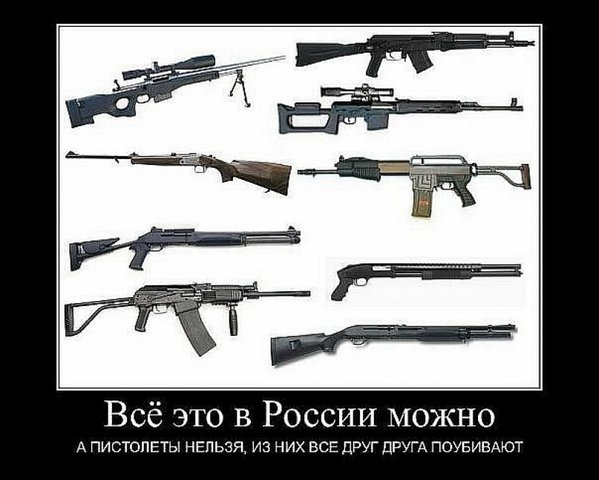
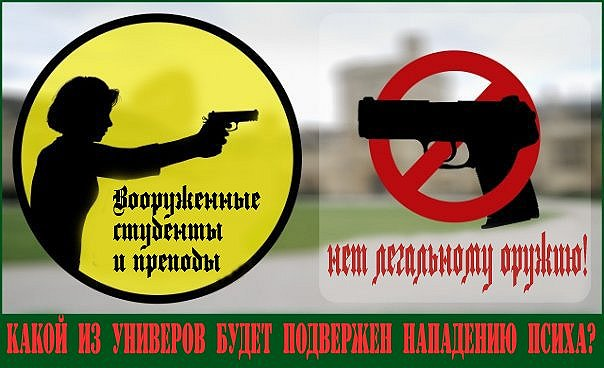
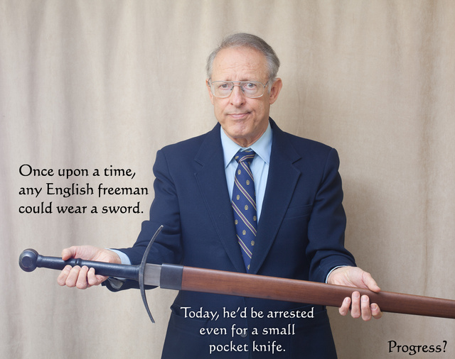
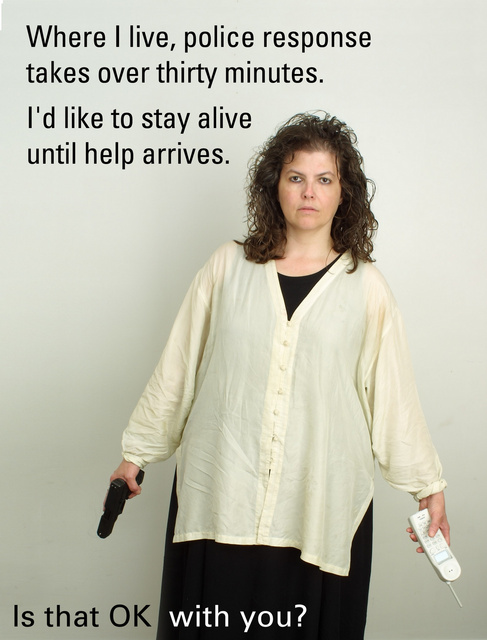

Техномад: Еще сомневаешься, зачем тебе оружие?
Это был первый пост, с которого все (т.е. обсуждение темы по всему ЖЖ) и началось.
http://teh-nomad.livejournal.com/928478.html
Опрос #1754017
Нужно ли России гражданское оружие самообороны?
Открыт: Всем, подробные результаты видны: Всем, участников: 4373
Да, но лишь с пересмотром существующих законов о применении
самообороны


 2132 (33.5%)
2132 (33.5%)
Да, это поможет снижению преступности в России


 1370 (21.5%)
1370 (21.5%)
Да, это поможет формированию гражданского общества в России


 1382 (21.7%)
1382 (21.7%)
Нет, есть травматическое оружие - этого достаточно


 702 (11.0%)
702 (11.0%)
Нет, я не смогу выстрелить в человека


 108 (1.7%)
108 (1.7%)
Нет, для защиты граждан существуют полиция


 370 (5.8%)
370 (5.8%)
Не знаю, у меня оружия нет и не будет


 182 (2.9%)
182 (2.9%)
Другое (в каменты)


 114 (1.8%)
114 (1.8%)
Как видите -- четко против лишь 18.5% ответивших (да и то "я не смогу" -- это не значит, что другим тоже нельзя). Причем блог, где проводился опрос, просто топовый, а не "для стрелков", так что вполне репрезентативно.
Почитаем комментарии -- самые показательные я собрал здесь.
l_horse: Я тут почитал комменты, и сложилось ощущение, что многие сторонники КС не становились жертвой нападений. К примеру (личный опыт). Утро, Московский проспект СПБ. Иду на работу. Меня обгоняет чел и резко (и неожиданно) бьет в лицо, еще один с сзади бьет под колено и я, ясен пончик, укладываюсь на асфальт, все происходит за считанные секудны. Вижу 5 человек, которые одновремнно начинают меня пинать и требовать деньги и телефон. В 30 метрах машина ДПС, сотрудники не реагируют, прохожим тоже все равно в целом. Итог - пара синяков, деньги и телефон при мне. Парни ретировались, так как атракцион стал затягиваться, а не потому что я Рэмбо. Я просто лежал, орал на них матом и не терял сознания от пинков в голову :) и не отдавал того чего им так хотелось. Выводов лично я для себя сделал несолько:
1.Был бы ствол, я бы его не успел достать
2.Если бы успел достать, то вместо пары синяков имел бы целую эпопею по защите в суде своей правоты.
3. Если есть первые два пункта, значит ни КС не травматик мне не нужен.
История моего друга, Владимирский проспект. Проходя мимо подворотни получил удар по голове, потерял сознание. Очнулся, нет денег, телефона, плеера. Кто его ударил и как это вышло он не знает. Думаю если он был вооружен, оружия бы при себе он тоже бы не обнаружил.
Думаю, эти две истории совершенно обычны и ничем не удивительны, мы обычные обыватели, попали в обычный переплет.
Бывают истории хуже, если знаете в баре хххх некий молодой человек стреля в другого, который какой то известный актер сериалов и этот актер от выстрела потерял глаз. Стрельба по пьяной лавке. непойми из за чего. Один поимел проблемы с законом, другой лишился глаза. Более того, и тот и другой не преступники, просто что то не поделили.
Я лично, сторонник оружия для защиты дома, охоты. Но я против ношения оружия на улицах. На улице порядок и безопасность должна обеспечивать полиция. Оружие в руках рядового гражданина как минмум бесполезно, как максимум опасно.
naganoff: 1. Вы бы успели достать ствол, потому как его выдаче должна предшествовать подготовка - навыки применения оружия и обращения с ним. Абсолютно любого нормального человека можно обучить быстро извлечь оружие и поразить 2-3 мишени с дистанции 0-5 м до того, как кто-то успеет его хотя бы раз ударить. Подготовленного человека нельзя застать врасплох. Вас бы тоже не застали.
2. Одновременно с легализацией должны вноситься изменения в УК. Пределы необходимой самообороны должны быть расширены, и должно быть обеспечено, что нельзя будет пришить убийство по неосторожности.
Аналогично - с другом. Если бы он был подготовлен и с оружием, то он никогда бы не шёл расслабленно мимо подворотни.
Актёру выстрелили в глаз на улице вроде, а не в баре, причём когда он попытался кого-то защитить от нападения. Там не было пьяной драки.
Полиция не способна обеспечивать порядок, это ясно. И она не может быть повсюду, чтобы предотвращать преступления везде, где они происходят. А вот граждане с оружием всегда окажутся на месте преступления (поскольку они - потенциальные жертвы) и предотвратят его сами. Поэтому оружие в их руках полезно. Оно будет опасно только для преступников.
Добапвлю, что ситуация "сбили с ног" затрудняет извлечение оружия, но не делает его невозможным. Если его вообще нет, то это значительно труднее, правда ведь? При этом нападавшие разбежались бы куда быстрее, если бы услышали выстрел, что характерно.
paulstrong: А Вы представьте такую ситуацию: Вы со своей семьёй идёте по лестничному проёму к себе домой и на пути Вашего следования, как обычно, в это время выходного дня, сосед по лестничной клетке стоит и курит (он курит всегда, потому что очень часто пьёт, хотя это не взаимосвязь). Обычно Вы проходите мимо, лишь проглотив порцию табачного дыма, но сегодня сюрпрайз (принят закон о легализации огнестрельного оружия в России): получите соседи всю обойму. КОНЕЦ ФИЛЬМА. А жизнь, не фильм - ее не перематать...
mortus_36: А сегдня чтоже он вас с САЙГОЙ-12 на лестнице не встретит, с ней же надежнее. Так что это все ваше воспаленное сознание, что мешает купить соседу дробовик сегодня.
konewod: но это проблема уже с моей головой, а не с законом об оружии, неужели у нас столько неадекватов? у меня лично дома есть арбалет - не просто игрушка, а вполне можно убить небольшого кабана. я же не выскакиваю на лестницу, когда у меня там панки заседают до трёх ночи
kerbcrawler: Ну сейчас-то у вас же нет желания потыкать соседа кухонным ножом - то же самое будет и с пистолетом.
Сколько раз удивлялся такой "аргументации" -- мол, все психи неадекватные сидят и ждут, когда им разрешат КС. Пока именно его в руки не получили -- ведут себя тихо, но если вдруг -- то как только, так сразу!

turbolunokhod: Поддерживаю, если обычное оружие продавать также, как травмат, ничего хорошего не выйдет. Мелкая преступность пойдет на спад,но зато количество бытовухи со смертельным исходом вырастет в разы , т к стволы пойдут вместо сковородок и молотков.Да подросток может спереть ствол у папы-алкаша и пойти в школу поиграть в ковбоя.
nocturnoculto88: полностью согласен. Любая мелкая стычка сможет перерасти в кровавую баню, если оружие будет повсеместно доступно.
miller777: Не подтверждается ни мировой практикой, ни здравым смыслом.
Какое сейчас кол-во бытовухи с применением ружей? Как много пап-алкашей сможет (и захочет) приобрести КС?
Подобные деятели исходят из странного предположения -- мол, по щучьему велению пистолеты и револьверы появились у всех сразу. Ну, или, хотя бы, начали продаваться повсеместно любым желающим по цене пары литров пива. Их жуткие прогнозы о всеобщей перестрелке имеют смысл лишь в этом случае.
naganoff: Конечно, никто не предлагает, чтобы пистолеты можно был покупать, как горячие пирожки! Медкомиссии, вступление в стрелковый клуб и курс стрелковой подготовки и обращению с оружием должны предшествовать получению лицензии.
candy_caramels: На водительские права тоже формально нужна медкомиссия, со справками от психиатра и нарколога, курсы вождения и сдача экзамена в гаи. А в реальности права просто покупают. Полагаю с разрешением на оружие будет точно так же. Некоторые мои знакомые уже купили разрешение на травмат
naganoff: Систему нужно выстроить грамотно. Вот есть стрелковый клуб, который только и может рекомендовать выдавать лицензию на ношение оружия, или нет. Не будучи членом клуба, лицензию не получишь.
И вот есть профессионалы, которые этот клуб держат. Каждый месяц они получают бешеные деньги от членских взносов тысяч людей. И приходит к ним псих или дебил, который предлагает им деньги, чтобы они выдали ему свою рекомендацию, хотя они видят, что он - псих или дебил. Они станут рисковать все, что у них есть, и рекомендовать его? Да они пошлют его с его деньгами куда подальше.
candy_caramels: Можно долго рассуждать как оно должно быть, но вспомните в какой стране мы живем и как тут что делается( и представьте возможные последствия...
naganoff: Это зависит от отношения к стране и народу в принципе. Я не считаю, что мы чем-то хуже Молдавии и молдаван, и Литвы и литовцев. Ну вот ничем не хуже мы, чем они (а у них оружие легализовано).
Аргумент "права покупают" выдвигают те, кто и не пробовал оформить себе оружие. И никто не привел статистики -- сколько случаев выдачи разрешения на нарезное оружие без пятилетнего стажа владения гладкоствольным? Кто мешает оставить ту же -- очень даже рабаотающую -- систему для КС?
sheenkow: Тоже хотел про охотников написать. У нас в Костромской области есть такие дикие лесные деревушки (Макарьевский, Кологривский районы), где практически в каждом доме (если там еще люди живут, конечно), имеется ружье. А то и не одно. И ничего. Идет нормальная повседневная жизнь, люди вкалывают, выживают, мужики попивают, конечно. Бытовуха, ссоры, склоки - куда без них((( Но вот не стреляют по пьяни мужики друг в друга из ружей! Не стреляют, и все... Что ты с ними будешь делать, с этими странными русскими?))
miller777: Еще раз, по буквам:
Травматы - НЕ ОРУЖИЕ. И сознательно, и подсознательно они воспринимаются не как оружие, а как этакий резиновый кулак семиметровой длины, внешне очень похожий на крутую пушку. Быдловладелец считает, что выстрелить из такой игрушки - это как дистанционно по морде дать, без серьезных последствий.
Крутизна без ответственности.
Оттого и порог применения у них никакой.
Оттого и бравада.
Бах! - на выходе труп или инвалид. Не ждали... Сюрприз!
Было по зомбоящику интервью с одним таким стрелком. Его спрашивают:
- Если бы у вас в руках было боевое оружие, вы бы выстрелили в него?
Ответ:
- Нет, конечно. Что я, ненормальный, что ли?
Нормальная реакция.
Из боевого оружия никто просто так палить не будет. Тем более, оно отслеживается на раз.
Дебилы там накупят или не дебилы - это дело медкомиссии. Главное, что боевое оружие применять так бездумно, как травматы, никто не будет.
didimih: себе покупать не буду, дабы не убить никого, пусть лучше меня убьют, кровь будет на них, но не на мне.
Этому я вообще умилился :-) Но тут хотя бы "себе не куплю", а многие-то про "никому нельзя"!
naganoff: Оружие, действительно, не доводит до добра в руках преступников. Они сейчас вооружены, а нормальные люди - нет. Неужели это не понятно? Преступникам плевать на запрет. Запрет ударяет только по гражданам.
birulkin: Пока ещё не все ходят с оружием.Если будут ходить все вы представьте что будет?
Любой конфликт будет решаться с помощью пистолета.Подрезал машину,пуля в голове.Перешёл на красный,нож в спине.Случайно толкнул,недобро посмотрел итд итп.
Если даже сейчас в конфликтах,люди страдают от травматического оружия что будет от холодного?
Меньше народу носит оружие лучше всем.
naganoff: Все не будут ходить. Кто-то не захочет купить. Вы же не хотите. Кому-то не дадут лицензию.
А вот кому дадут - те будут подготовленные люди. Ведь выдаче лицензии должна предшествовать не только проверка на психическое здоровье и на отсутствие судимости, но и получение членского билета в стрелковой организации, обладающей правом на рекомендацию по выдаче лицензии своим членам. Там будут работать только настоящие профессионалы, которые сразу раскусят любого психопата, способного стрелять при каждом удобном случае. Они не возьмут денег, которые он им может предлагать - потому как будут получать в разы больше ежемесячно от членских взносов, и им не с руки будет рисковать своим бизнесом из-за взятки одного психопата. Такая система уже работает в ряде стран Запада.
От травмата люди сейчас страдают, потому что применяют его не задумываясь, ибо уверены, что он вреда не причинит особого. Травмат надо запрещать, а огнестрел - разрешать. Человек будет психологически иначе относиться к оружию в своей руке если будет знать, что оно способно убить.
Кроме того, опыт Молдавии и Литвы показывает, что там практически никакие конфликты не решаются с помощью пистолета. Никто не стреляет за то, что кто-то кого-то подрезал или толкнул, недобро посмотрел. Такого нет ни в одной стране мира, где оружие разрешено.
birulkin: Насколько наивны эти суждения,особенно в нашем государстве,где можно купить абсолютно всё(в зависимости от жадности чиновника,мошенника)начиная от любой корочки и заканчивая тюремной свободой.
В данном случае будет так-же.Если ты больной на голову,но у тебя есть деньги пойдёшь и купишь любое оружие.
Я не понимаю почему все так паникуют.У нас каждый день на улицах убивают?Да есть криминал,но он не настолько массовый.
Есть травматическое оружие,хочешь купи его,оно хоть не убивает.
naganoff: Потому и неэффективно оно. Не потому, что обязательно надо убить - а потому, что его не боятся.
А что наивного в том утверждении, что не будут брать взятки владельцы стрелкового клуба (который только и будет обладать правом рекомендовать граждан к получению лицензии), если они будут зарабатывать в месяц условно сто тысяч рублей на членских взносах, а если они рекомендуют психа, и он пристрелит кого-то - то их бизнес накроют? Или псих предложит миллион рублей? А не дешевле ли психу на чёрном рынке ствол купить будет? Зачем заморачиваться на всяких легальных процедурах? Связался с нужными людьми - и купил нелегальный ствол. Это и сейчас можно делать, это и делают всякие преступники и психи. А вот граждане лишены возможности обороняться от них.
birulkin: Вы забываете что сейчас носить левый ствол чревато-уголовное наказание,а в вашем случае можно носить белый ствол и быть уже отморозком в законе.
Кол-во преступлений после легализации холодного оружия в России увеличится.Это не мирная Европа,а разнонациональное гос-во и ненависть различных типов,классов,рас друг к другу у населения зашкаливает.
naganoff: Вы ведь признаёте, что преступники сейчас уже носят оружие незаконно. И им на это глубоко наплевать. Более того, уже вооружены и "элита" (у каждого, кто хочет - наградные стволы за "особые заслуги"), и чиновники, у многих охрана. Не вооружён только народ.
Как раз потому, что ненависть зашкаливает, и нужно легализовать оружие. Это единственный выход как-то спасти ситуацию. Потому что у одних оружие есть, а у других - нет. Это как в холодную войну с ядерной бомбой - у американцев она была, и если бы у нас её не было, то нас самих бы уже не было. А так шансы были уравнены.
Кроме того, США - далеко не идеальное мирное государство. Там тоже "ненависть различных типов,классов,рас друг к другу у населения зашкаливает" - однако уровень убийств на 100 тыс. населения вдвое меньше, чем в России. При этом у населения 280 млн. стволов на руках.
birulkin: Опять не верю.Например в том-же США ни один раз
происходили случаи,когда сынок наигравшийся в онлайн игрушки приходил в
колледж и валил всех подряд.Потому-что у папы было оружие.
У нас на улицах редко стреляют,пока не у каждого второго пистолет.Будет у
каждого,поверьте каждые выходные будут трупы.Вы говорите ерунду,надо думать
не только о своей безопасности,но и безопасности окружающих.
naganoff: В Молдавии оружие разрешено - и всё в порядке. В Литве тоже. Уровень убийств на 100 тыс. населения более чем вдвое ниже, чем в РФ. Или мы хуже них? Мы - животные?
birulkin: Да,мы животные.Я уже писал что меж расовая ненависть у нас очень сильная,в России не нужно оружие,если не хотим вооруженных конфликтов.
naganoff: Вот в этом - основное отличие. Сторонники легализации не считают свой народ животными.
А что касается межрасовой или межнациональной ненависти... Вообще-то, если обратиться к криминальной статистике, в конфликтах, имеющих межнациональную почву, одной из сторон (угадайте, какой именно) постоянно используется оружие. Когда холодное, когда - травматическое, а когда и огнестрельное. Они уже вооружены. Иными словами, вооружённые конфликты с межэтническим подтекстом уже давно происходят. Мало ли, чего мы не хотим. Они уже есть. Вопрос только в том, что у пострадавшей стороны всегда отсутствует оружие - и поэтому она обычно представляет собой жертву.
Добавлю про колледжи и т.п.: преступник идет именно туда потому, что там типа "зона, свободная от оружия. Как часто психи идут устроить массакр на стрельбище?

iranm: я против оружия.
znour: Когда Вас будут убивать, или Ваших детей, или Ваших родителей, я пройду мимо. Если Вы мне, добропорядочному, несудимому, прошедшему армию с боевым оружием, не доверяете, почему я должен рисковать своей шкурой, спасая Вас, Ваших детей или Ваших родителей? Это будет глупо! А я разумный.
iranm: Проходите. Берегите свою жизнь. Но я в такую ситуацию не попаду. Ибо должны быть резкие причины попасть под перестрелку и под них никто не попадал даже из моих знакомых. Да и не рассчитываю я ни на кого кроме себя. Никто не пойдет меня спасать. Только я сама себе могу помочь.
dark_rip: Ну-ну. Верь в это. А когда твоего сына/дочь будут убивать на твоих глазах, а ты/вы НИЧЕГО не сможешь сделать - уверяй себя, что это происходит не с тобой, ибо ты точно в такую ситуацию не можешь попасть.
iranm: Какие вы злые. Вам точно нельзя давать в руки оружие. Только дай вам оружие вы пойдете всех убивать я в этом не сомневаюсь. Здесь агрессия у вас на меня, дай оружие вы будете проливать кровь.
dark_rip: Я не злой, я реалист. Очень смешно читать фразы типа "со мной никогда такое не случится", т.к. судьба очень любит доказывать тем, кто так говорит обратное.
Ну что-же, бойтесь меня, бойтесь таких, как я, и совсем не надо опасаться толпы пьяных дегенератов в подворотне, они ведь безоружны.
зы. И да, для справки, ударом трубой сзади можно убить даже Мухамеда Али, без всяких там пистолетов.
iranm: Я о вас пост в своем ЖЖ написала. Нельзя так говорить, как говорите вы. Вы реалист и если Вы допускаете, что в Вашей реальности на Вас могут напать вооруженные преступники, пусть так и будет. Смотрите мой ЖЖ:
"Написала у техномада, что против оружия целая ватага мудаков кинулась со мной спорить! Фриц расставил все по полочкам и был очень убедителен! И я написала, что убедил! со мной стали спорить те кто против оружия. И те кто был против оружия все таки были не так агрессивны! Думаю, что оружие давать людям не надо! Только агрессивные люди хотят им владеть! А я за МИР! и отстаньте от меня со своей агрессией!
Да, люди-мудаки, потому что никто меня не поддержал! все писали только поспорить выбросить свою агрессию и оскорбить!"
uka_zluka: Узнаю себя. Когда-то и я была пацифистом. Сейчас же поняла, что "сколько преступных планов может разбиться вдребезги от одного лишь взгляда на наличие оружия у гражданина".
Как умиляет "такого не может со мной приключиться, так как этого не может быть никогда!".
Обратите внимание: нет страха реальной опасности (преступников), зато есть страх по отношению к орожию. Иррациональный, противоречащий действительности, с кучей проекций... Психиатры называют это фобией.
mr_serginho: Может и по красной кнопке каждой семье дать?)
О чём вообще спор, США яркий пример того, как людям разрешили носить оружие. России такие проблемы нужны? А у нас ещё и покруче будет.
Надо следить, чтобы ни у кого не было оружия, а не раздавать всем подряд. Тогда и порядок будет. А от хулюганов отбиваться можно и без огнестрела. Газ, шокеры, пневматика, травматика - выбирай, не хочу! Нет же, хотим себя мачо почувствовать, Кольт нам подавай.
znour: Врете. В США стреляют только там, где оружие гражданам запрещено. В Чикаго по прохожим. Или в университетах или в школах. А вот на стрелковых полигонах нет. И в церквях - нет. Потому что знают, что будет так.
mr_serginho: Хм, спасибо, интересно.
Но, рассматривая тот же случай в церкви, если бы прихожанка пальнула из травматики, эффект был бы тот же. Зачем стрелять наубой? Задержать преступника можно используя разрешённые виды оружия.
А вот гарантия того, что какой-то придурок не ворвётся в класс, где учится ваш ребёнок и не начнёт валить всех подряд, при этом отсутствует. С пневматикой и травматикой никто такого самодурства совершать не будет, а если произойдёт инцидент, последствия будут не столь фатальными.
С преступниками должна бороться наша доблестная полиция, и меры надо принимать в отношении совершенствования системы правоохранительных органов.
Разрешение на ношение оружия - это как лечение конъюнктивита клизмой, может и поможет, но побочный эффект уж точно будет более ярким.
znour: Нет. Тут дело принципа. Если он/они кинутся на меня, я должен быть уверен, что успею убить хотя бы одного до того, как они убьют меня. Я должен быть уверен, что хотя бы разменял свою жизнь на жизнь бандита, что бандиты потеряли одного соратника. Травмат такой уверенности нет. Поэтому сейчас я просто пройду мимо. Или постраюсь убежать, и пусть бандюган расстреливает безоружных. Своя шкура ближе к телу.
mr_serginho: Это всё очень ситуативно..В некоторых случаях и имея огнестрел не каждый рискнёт ввязываться.
Та же самая прихожанка, вряд ли бы стала стрелять если бы ворвалось десять нападающих и у неё не было бы шансов. Такие случаи уже не решить ни каким оружием, разве что с шахидским поясом ходить:)
А одного двух можно и травматикой обезвредить, всё опять же зависит какой подготовкой ты сам обладаешь.
znour: Тут вопрос такого плана. Вы бы хотели, чтобы прохожие остановили бандитов, если бандиты напали на Вас, ваших родных и близких, на Ваших детей и/или Ваших родителей? Если да, Вам придется разрешить здравомыслящим иметь достаточно хорошее оружие.
Обращаю внимание на стандартное: "что угодно, лишь бы не КС!" -- и пофиг эффективность. Нередко один и тот же персонаж вопиет и о том, что даже из травматиков убивают, и о том, что травматика должно быть достаточно для самообороны. При этом "забывается", что из травмата для эффективности придется стрелять в голову, а вот из обычного пистолета или револьвера -- можно и в руку/ногу. Не говоря уж о том, что его часто достаточно просто достать, и даже стрелять уже не потребуется...
iranm: А травматическое не поканает?
hyperprapor: Это спецсредство. Для разгона демонстраций, например. Или для нейтрализации одиночного психа. Но заметьте - копа с таким оружием, помимо наличия у него нормального, еще и страхует пара тройка коллег с нормальным же. И что, предполагается, что гражданин более профессионален, чтобы в одиночку обойтись такой хреновиной там, где требуется взвод копов? Тогда в чем проблема - при таком профессионализме хуже от нормального оружия не будет.
Но всему свое место, если серьезно. Травматики ниша - явно не гражданское оружие. Какой дурак его туда вообще поместил... Убить - оно как раз замечательно может. А вот с останавливающим действием и следообразованием - у него большие проблемы.
iranm: Не понимаю зачем мне оружие. Война что ли? на улицах да грабят очень редко наркоманы, но делают это в подворотне, чтобы никто не видел, на людях такого не делают. Может просто не надо ходить по этим подворотням? А от хулиганов электрошекер подойдет. Я думала его завести, идиотов в нашей стране полно, вооруженных преступников гораздо меньше и грабить меня смысла нет. Если только терроризм, но он очень редко происходит... И то взрывом, так что бывают ситуации, когда оружие не поможет. (никакое оружие)
hyperprapor: В РФ - более 20тыс трупов от криминала ежегодно. Это примерно как в Мексике, ведущей нарковойны. Или как в некоторых странах Африки.
По уровню криминала - РФ прочно держится в первой десятке. С конца. Хуже - не так уж много стран.
Вы когда выезжаете на работу или домой - много ДТП видите? Вот и щелкайте в уме - с такой же частотой рядом с вами кого то убивают.
Вам охота играть в такую лотерею? Мне - нет.
iranm: 20 тыс трупов от криминала? А Вам не кажется, что эти люди сами это позволили (может кто-то с кем-то что-то не поделил), связался с плохой компанией... Кто будет просто так на улице на Вас нападать? Только наркоманы. С наркоманами может и травматика справится и правило не ходить в подворотнях (хоть не всегда это можно)20 тыс? а в процентном соотношении сколько это будет? Имеется в виду сколько людей вообще в России сейчас живет?. В одной Москве 6 млн. Людей огромное множество, и из них всего 20 тыс? возможно это 0,01 процент? И вы верите, что можете попасть в этот процент? А если всем выдать оружие, то сколько станет потенциальных убийц... мало ли... Могут люди просто друг друга перестрелять. Самосуд.
trmpnghdghg: Мою бывшую одноклассницу задушили в лифте. Но она сама виновата, конечно, незачем было одевать сережки и кольца, а также брать с собой деньги.
iranm: Ага и по лифтам нечего ездить с незнакомыми людьми. (знаете сама боюсь ездить в лифте)
denissoff: То есть виноват не преступник, а потерпевший, что оказался не в том месте. А преступника или террориста НАДО ПОНЯТЬ у него мол работа такая. Типичная точка зрения пгавозащитников типа С.А.Ковалева
Очень верно подмечено.
trmpnghdghg: владею охотничьим гладкоствольным огнестрельным оружием. Через пару лет подойдет срок, когда я смогу покупать нарезное длинноствольное оружие.
И вот ведь какой парадокс. Я смогу купить винтовку, из которой реально на километр поражать мишени габаритом с футбольный мяч, а энергии у пули будет достаточно, чтобы убить слона. И это все мне будет можно купить, хранить, перевозить, носить на охоте.
Но вот пистолет (нормальный, не травматический) я не могу трогать за пределами тира. Даже владение патронами к нему будет незаконным. Мне это кажется странным. А Вам разве нет?
iranm: Нет странным не кажется. )) ведь ружье предназначено для охоты. Только не знаю нужно ли на него разрешение или нет. Да и вообще проблематично ходить с ружьем по улице. Заметно... а вот пистолет легко спрятать.
trmpnghdghg: пистолет - оружие изначально задуманное как оружие самообороны у нас для самообороны запрещено.
Но при этом разрешено оружие, которое как раз может идеально служить для бандитского нападения. Дело в том, что при выстреле из травматического пистолета в голову метров с двух, тот, в кого стреляли, запросто может получить "ранение несовместимое с жизнью", как это пишется в протоколах. То есть убить из него можно. Причем пулей, которая никак не идентифицируется. Даже если найти пистолет, то невозможно будет доказать, что выстрел был сделан именно из него.
Зато он типа не предназначен для убийства, ага. Такая вот загогулина.
iranm: Я живу в маленьком городе. У меня нет проблем таких. Я большую часть сижу дома, так что мне эти разговоры...
bror: Так вы от реальной жизни, от реальной России, далеки почти так же, как люди живущие в РБ, Уркаине, Казахстане и т.п. Вроде похоже, а не то. И в свете этого ваша позиция ещё более странной выглядит
iranm: Почему странной? если я не сталкиваюсь с этим, то вот моя позиция! Она вполне понятна и логична для меня.
"Этого не может быть" в чистом, рафинированном виде. Какой прекраснодушный эльф!
djkr: Вы предлагаете закрепить за каждым гражданином пару вооружённых полицейских 24 часа в сутки? Злоумышленник, как правило, опасается полицию. Поэтому, когда он нападает на жертву, как правило, полиции рядом нет.
Вы ещё предложите право управлять автомобилем закрепить исключительно за профессиональными водителями. Тридцать тысяч в год гибнут на дорогах, и что-то никого это особо не беспокоит. А научиться хорошо стрелять намного проще, чем научиться хорошо водить автомобиль.
Более того, хорошо -- не обязательно, достаточно "удовлетворительно". При этом промах при выстреле редко когда приведет к несчастному случаю -- маловероятно, что вас будут атаковать срди толпы. А вот врезаться на автомобиле -- часто сразу несколько жертв. Причем с травмами похуже огнестрельных.
joe_rivetto: оружие - удел профессионалов. никто ж сам себе зубы не лечит, сайты не делает. дилетанты - всегда зло. чем меньше орудий самоуничтожения у людей в руках, тем лучше.
vova_maltsev: Ага. То есть бандиты имеют права носить оружие, а люди защищаться от них не имеют права, так?
joe_rivetto: права такого нет, они нарушают закон. за соблюдением закона следят профессионалы в лице полиции и других силовых структур.
vova_maltsev: Хорошо следят? Много там профессионалов? Спасет ли вас профессионал, в темной подворотне от гопника? А если не успеет?
joe_rivetto: вопрос из другой плоскости. вместо того, чтобы требовать ввода оружия, из которого вас же потом и подстрелят, требуйте более профессиональную полицию и армию. а то в итоге скатится все в средневековье. и потом, не надо ходить по темным подворотням.
kajibtep_l: Скажите, а вы случайно сами-то не бандит? Вам в таком качестве должно быть лучше всех известно, что предлагаемые вами методы не работают, и что они нереальные... Зато становится понятным, почему вы ратуете против оружия У ЗАКОНОПОСЛУШНЫХ ГРАЖДАН.
joe_rivetto: оружие не исправит "методы", а только усугубит их. бороться надо не со следствием, а причиной.
kajibtep_l: Откуда такие выводы? У вас есть чем всё это подтвердить? Я вот знаю, что в странах с разрешённым КС преступность снижается в разы с момента разрешения - а в странах, где оружие запрещают (например, та же Англия), она, наоборот, увеличивается скачками.
joe_rivetto: здравый смысл мне подсказывает и жизненный опыт. живу в той же англии, вы мне сказки про "увеличивается скачками" не рассказывайте. здесь даже травматы запрещены, полицейские ходят без оружия. историй а-ля "убил по неосторожности" здесь в разы меньше чем в РФ.
kajibtep_l:


molema: я не могу сказать за всех пенсионеров. но вот моя бабушка лучше бы умерла, чем причинила смертельный вред другому
vova_maltsev: Почему из-за вашей покойной бабушки мне нельзя пистолет?
molema: Потому что из таких бабушек вся страна состоит.
vova_maltsev: У нас страна бабушек? А вот мой покойный дед в 75 лет здорового мужика пьяного с лестницы спустил. Он бы от пистоля не отказался. Стар уже был. В 40 лет он спустил с лестницы бы четверых.
Какие кульбиты логики! Бабушке нельзя == всем нельзя. И вообще все население -- бабушки molema. Включая дедушек этой же molema. Чудеса!
А потом прогибиционисты удивляются, что это с ними вежливо не разговаривают, а иногда просто посылают в пешую эротическую прогулку, вертя пальцами у виска. А как предложите отвечать на такие вот "аргументы"?
molema: ну а будут бытовухи решаться оружием. и если от удара ножа ещё можно защититься, то от выстрела в упор - нет.
hyperprapor: Гон. В 85% первые два удара ножом и становятся смертельными. Жизнь не татами и не кино - даже чемпиона по карате убила абсолютно неподготовленная шайка малолеток.
Нападение толпой на безоружного - гарантирует отсутствие проблем. Нападение же на вооруженного, даже с оружием - риск для кого то отправиться на тот свет. Вот и вся математика. Швейцария - одна из самых вооруженных в мире стран. И самая безопасная.
molema: Швейцария одна из самых развитых и богатых стран, где отморозки в подворотне не возможны, а оружие не необходимость, а приятный бонус.
посмотрите на статистку - как вы думаете, почему оружие разрешено в развитых и богатых странах? и не надо думать, что эти страны богаты и развиты, потому что у населения есть оружие.
и ещё раз посмотрите на статистику - в развивающихся странах количество преступлений на душу населения. оружие это мифическая панацея, верить в волшебную силу которого как верить в дедушку мороза.
hyperprapor: Молдавия, Болгария, Румыния и другие - не являются сколь нибудь богатыми или развитыми.
Оружие - НЕ повышает уровень преступности. НИГДЕ. В мире НЕТ НИ ОДНОЙ страны, где бы легализация оружия привела к росту преступности.
Да, оно не магический предмет. Но В ЛЮБОЙ стране есть ответственные люди, которые способны им пользоваться. Где-то больше, где-то меньше. Где-то выгод от владения оружием много. Где-то поменьше. Но НИГДЕ НЕТ от него вреда. Это - ФАКТЫ.
dimkarr: Бред полнейший. Первыми кто купит пушки, будут браться с кавказа и гопота.
snier: братья с кавказа имеют в 4 из 5 домов и пм и ак и гранатки найдутся, так что вопрос абсолютно не бредовый, а крайне актуальный и не даром бараны в ролике показаны, вот сейчас мы для кавказских братьев именно бараны и есть, такие же беззащитные, а еще и тупые, которые пишут что оружие не нужно - когда вам или вашей семье будет угрожать опасность, посмотрим как вы запоете, если останется чем петь либерастия ебаная
aloha_madness: ага, легализовать огнестрельное и за один день сократить население страны еще на треть...российское общество к этому абсолютно не готово, это равносильно, как дать обезьяне гранату...
vova_maltsev: Почему-то к этому готово население молдавское и литовское, готовы охотники, не перестреляли друг друга еще солдаты.. И как общество должно к этому "готовиться"?
aloha_madness: пример с военными и охотниками весьма неудачный, эти люди используют оружие в своей профессиональной деятельности, для чего проходят специальную подготовку для обращения с ним (в случае с охотниками, они ходят справки всякие собирают, чтобы получить разрешение на ношение, хранение и т.п. опять же специального охотничьего оружия).
Совсем другое дело раздавать направо и налево (а в нашей стране именно так и будет, ибо бабосы решают!)в свободное ношение боевое оружие всяким гопникам, алкашам, детям продажных ментов и чиновников, зарвавшейся школоте и прочим неадекватам, коих в одном только моем дворе обитает великое множество (а мой район обитания находится еще в пределах МКАДа), которые при первой удобной возможности будут хвататься за свои Глоки и Магнумы 46 калибра от недостатка серого вещества в голове, да и просто от осознания своей неуязвимости..а хуле, со стволом за пазухой героизм так и распирает! еще неизвестно от кого обществу в итоге придется обороняться...
naganoff: Про Молдавию и Литву не ответили. Почему там друг друга не перестреляли?
snier: вот скажи, ты получив завтра легальный ствол пойдешь кого-то убивать, зная что убив из этого ствола к тебе придут на следующий день и будешь долго сидеть турма, пойдешь? Я уверен на 99% что нет, а теперь пойди спроси своих знакомых, друзей и их знакомых, что бы они представили ту же ситуацию, что им просто достался легальный ствол и кого они пойдут завтра убивать и пойдут ли.
Все доводы на тему "ой завтра все пойдут друг друга убивать, ой караул, НИЗЯ НИЗЯ!" это чушь и маразм навеянный зомбоящиком, где каждый случай стрельбы из резинострела представляют как конец света с явным подтекстом "это такая ужасная вещь, ее надо запретить". Вот с чем я согласен, так это с тем что травматы необходимо запретить, потому что они не воспринимаются людьми как оружие, которым можно убить - он ведь называется травматический! И совсем другое дело когда ты будешь четко осознавать что у тебя в кобуре эффективный смертоносный аппарат для делания дырок и ты тысячу раз подумаешь прежде чем его применять
Кстати, очень верно. КС -- это эффективный аппарат для делания дырок. Да, может быть смертоносным. Но откуда берется это самое хоплофобское "предназначен исключительно для убийства"?!
hyperprapor: Молдавия - полностью русскоязычное население. Разрешили оружие - преступность упала.
Литва - до четверти русскоязычного населения. Разрешили оружие - преступность упала.
Латвия - до четверти русскоязычного населения. Разрешили оружие - преступность упала.
Эстония - до четверти русскоязычного населения. Разрешили оружие - преступность упала.
Болгария - славянское население. Разрешили оружие - преступность упала.
США - при переезде, даже будучи негражданином - русские имеют возможность купить оружие. Последние 30 лет - преступность падает.
Внимание вопрос - почему НИГДЕ в мире нет НИ ОДНОЙ страны, где бы после легализации гражданского оружия выросла преступность, и почему этот бред обязательно должен произойти в России?
sancho571: Если у каждого будет пушка, то уровень преступности и несчастных случаев вырастет согласитесь.
kajibtep_l: Хрена, не согласимся. Это не соответствует действительности.
vova_maltsev: уровень преступности снизится. Это статистикой давно доказано
molema: уровень преступности снижают разрешения на аборты, а не количество оружия!
hyperprapor: Оружие - снижает. Это доказанный факт. Преступника ограничивает не страх тяжести наказания, а страх его неотвратимости. И оружие - обеспечивает этот страх здесь и сейчас. Не "когда поймают, авось еще и не докажут, а если и докажут - больше условного не дадут!", а пуля - ей все равно, сын ты депутата, десятеро вас или один - она отправит на тот свет невзирая на чины и блат.
Но не просто количество оружия снижает - а в чьих оно руках. Легальное оружие на руках законопослушных граждан - мощный инструмент вдовесок к полиции. До ТРЕТИ преступников в США нейтрализуются вооруженными гражданами.
]jabervog: А чем вас нож не устраивает? Точно так же можно отправить на тот свет.
hyperprapor: Нож - не устраивает тем, что он хорош разве что один-на-один. Против группы нападающих - он не более полезен чем полное отсутствие оружия вообще. Он требователен к физической форме пользователя и подготовке. И наконец - с ним не очень получается избежать травм. Если дошло до рукопашки - вы не отделаетесь парой царапин, скорее всего.
По статистике - если защищаться огнестрелом, шансы пострадать - 4%. Если не сопротивляться вообще грабителю и делать что прикажут - 25%. Если с ножиком побуянить - травмы получаете в 40%. Разница - вдесятеро.
Так что огнестрел - это именно что оружие самозащиты. Единственное эффективное, и именно для этого и созданное. Нож - преимущественно оружие нападения. Защищаться им затруднительно, но нанести 1-2 смертельных удара изподтишка - самое оно.
jabervog: Можно продолжить рассуждать, и станет понятно, что пистолет против толпы тоже не очень, особенно, если хотя бы пара негодяев тоже вооружены огнестрелом. Следовательно нужно разрешать автоматическое и а так же бэтээры. И тогда будет все ОК.
hyperprapor: Пистолет - это ЕДИНСТВЕННОЕ оружие пригодное для ношения. И при этом сколь нибудь эффективное. Да, для конфликта, если вы знаете о нем - лучше принести пулемет и гранаты и привести друзей с пулеметом и гранатами. Проблема в том, что нападения совершаются чаще всего тогда, когда вы их не очень то ждете. И отбиваться придется тем, что есть на вас. А пулемет почему то никто на себе не таскает. Даже и не знаю - почему...
Что до автоматического, артиллерии и бронетехники.... в США - оно легально. Знаете сколько было с ним преступлений? С 1986г - 2. ДВА. И оба раза - почему-то это были копы. Аналогично - в Швейцарии. Это не то оружие с которым совершаются преступления.
На сегодня - единственное оружие созданное именно для самообороны и наиболее эффективное в этой роли - пистолет/револьвер. Они не идеальны - и здорово уступают тем же дробовикам и винтовкам. Но... их главный и единственный плюс - возможность ношения. Ношения для самозащиты.
sancho571: Для самообороны сейчас лучше всего - ОСА. Пули на нее есть резиновые, толстые, ослепляющие. Убить не убьет, но ребра переломает. Думаю лучше световые использовать, так чтоб сразу толпу ослепило, безопасней будет. Но таким чудом пользоваться еще уметь надо, чтоб себе в итоге вреда не получить.
hyperprapor: Оса. Вы шутите. Во-первых, есть старый закон - на каждый килограмм массы биообъекта для надежной его остановки при выстреле в центр масс необходимо затратить НЕ МЕНЕЕ 10Дж. Сколько там у осы?
Короче говоря - это сказки. Практика говорит - что нужно порядка 500-700Дж, плюс проникновение в баллистический желатин НЕ МЕНЕЕ 13". Ни оса, ни прочие травматики не дают более 4см.
sancho571: Оса сделана для минимального нанесение вреда. Ни один дурак не полезет на тебя, если ты уже пальнул по нему, не думаю что это столь безболезненно. Конечно если цель убить, то тут без ствола никак.
hyperprapor: Вот именно поэтому "сделана для минимального нанесения вреда" - и лезут. Ее эффективность - 55%. Как видите "дураков" на практике - лезущих оказалось несколько больше, чем полагала теория "минимального вреда". Оружие ДОЛЖНО быть опасным. Иначе - оно бесполезно.
Эффективность ОС и травматегов хуже чем у сраной мелкашки из тира. Еще раз говорю - это ПОЛИЦЕЙСКОЕ спецсредство. Годное для разгона демонстраций, например. При условии наличия пары коллег с нормальным оружием за спиной. Если такое оружие у граждан - мы полагаем автоматом, что они более профессиональны чем полиция. Тогда какая проблема разрешать им владеть нормальным же оружием?
chepyxa: ахах, чтобы однажды твое оружие было использовано против тебя самого.
kajibtep_l: Вы это миллионам человек скажите, кого это оружие спасло...
chepyxa: а вы - миллионам, которых убило
терзают смутные сомнение, что орудие убийства может кого-то спасти
kajibtep_l: Ну, всё правильно, убило миллион преступников
- спасло миллион законопослушных граждан.
И кстати - убивает не оружие, убивают люди. И не только оружием.
chepyxa: а, видимо, в войнах участвуют исключительно преступники
и террористам тоже только преступники попадаются
а применимо к самообороне - я вот с собой в машине даже гаечный ключ для самообороны не вожу - так как не знаю, не долбанет ли мне этот мой же гаечный ключ мне по голове
только потому что я оказалась слабее
kajibtep_l: Мы сейчас не о войнах говорим, а о преступлениях. Поэтому я совсем не понимаю, к чему вы это сказали.
И я правильно вас понял - вы боитесь не того, что вас, к примеру, убьют, а того, что вам придётся защищаться?
chepyxa: вот я девушка
может, и не очень слабая, но явно слабее среднестатистического мужчины
и вот ситуация - на меня нападают, в лучшем случае я смогу достать оружие, но я не могу быть уверена, что это оружие не будет вырвано/выбито у меня из рук, дабы быть использовано против меня
не так?
hyperprapor: Не так. В США - 44% приобретающих оружие - женщины. 98% попыток изнасилования вооруженной женщины - провалились.
Именно потому что вы слабее мужчины, и тем более 2 и более - у вас НЕТ иного средства самозащиты в принципе. Даже рукопашка - и то не подходит, там важна масса. Даже против одного оппонента массой за 90+ кг, шансов у вас - ноль.
Для стрельбы же - достаточно иметь один глаз и одну руку. Две недели тренировок, и вы будете более-менее готовы дать отпор. например, так бывает. ну или вот, исповедь тетки, которой пришлось столкнуться с психом в своей жизни.
chepyxa: ой, ну все.
каждый для себя видит то, что хочет видеть
вы желаете видеть вокруг психов, жаждующих причинить вам какие-либо беды - флаг вам в руки
у меня мир в розовых очках
Самокритично, по крайней мере.
aloha_madness: Я вот не понимаю, что за такой невъеб..нный профит от массового вооружения населения?..что у всех так руки горят за ствол подержаться? нахрена он вам реально нужен господа, чтобы выстрелить по шинам подрезавшего вас урода? может быть отбиться от гопничка в подворотне,ну так они доспехи не носят, зачем огнестрел? от инопланетного вторжения землю спасти? есть много способов разрешить кофликт, как-то шмальнуть из травматики, ударить шокером, балончиком в глаза наконец и растереть), а вообще есть еще такой дедовский способ "ручками ручками" и "уходи негодяй, уходи!"..
а если, серьезно, кто-нибудь из сторонников легалайза может привести в пример РЕАЛЬНУЮ историю из своей жизни, когда ему действительно ОБЪЕКТИВНО было необходима валына?
hyperprapor: Для самозащиты - вариант не катит? Спорт. Коллекционирование. Да мало ли вариантов.
Угу. Чемпион России по карате - не смог. А вы, прям так круче значит? Он получил от нескольких вообще левых гопников по щщам - и помер скоропостижно. Как там ваша фамилия говорите? Гремит над ареной? Чемпион прибалтики по боксу в тяжелом весе - был зарезан двумя подростками. Вы наверное недавно примеряли пояс чемпионов, я пропустил это событие?
Да, пальнуть из травматики можно (шмальнуть.... мсье гопник и есть? Что за жаргон подзаборный?), проблема в том - что останавливает то она как раз плохо. И пистолеты то, нормальные пистолеты - летальность имеют порядка 14-16%, и примерно столько же оказывается не выведенными из строя при попадании. А уж травматика, с чахоточной энергией как оружие самообороны - вообще глупость. Убить - да. Это она может. При поражении определенных мест, головы или нервных центров - убивает. Но не останавливает толком.
Шокеры - в РФ не сертифицируются эффективные - Мин.Здрав установил нормы такие, знаете ли, в заботе о здоровье преступников. Так что то что продается - это так... тараканов щелкать. Ну или как дубинку использовать.
Газом. В глаза. И растереть... Мсье оригинал. Брюс ли - отдыхает. То что в реальном конфликте, просто ПОПАСТЬ в глаза - получается не всегда - это новость, наверное?
Ручками... Ну выше описано - чем такой подход заканчивается, несмотря на уровень подготовки. IDDQD отключите уж, вернитесь в наш мир.
Если серьезно - таких случаев ТЫСЯЧИ. Даже в Москве, по данным МВД за год - более 600 случаев оправданной самообороны. Целое сообщество в ЖЖ посвящено этому явлению - случаям вооруженной самообороны.
aloha_madness: нарвись этот злополучный бедняга боксер на тех же гопников, вооруженный пистолетом, это не сильно облегчило бы его участь, дело в том, что в рукопашной схватке огнестрельное оружие неприменимо...а если бы эти ребята были вооружены, то все закончилось бы для него еще быстрее...
а вот дальше у Вас вообще поток фантазии открылся, кого это там травматика не останавливает? вы не бредите часом? вы сами хоть раз из травматики получали, чтобы это утверждать, могу заверить это ОЧЕНЬ неприятно и правильный выстрел остановит КОГО УГОДНО! а может еще и шокер посчастливилось на себе испытать?? я держал эту штуковину в руках и впечатление осталось угрожающее от ее треска, в жизни не олез бы на человека с шокером и вам не советую, хотя может это внесло бы некую ясность в ход ваших мыслей..перцовый балончик так или иначе дает некое преимущество над человеком, который не вооружен, ну а если не удастся его правильно применить, ну не судьба значит...
я к тому, что если вам не помог ни один из вышеперечисленных способов самообороны, то и ствол вам не поможет это точно!
вся эта сухая статистика тут вообще не в тему, я прекрасно знаю, есть ситуации, когда человеку действительно нужно любыми способами бороться за жизнь, только вот принципиалбность в применении огнестрельного оружия в таких ситуациях это заблуждение
hyperprapor: Ну вообще то - не совсем так. 70% огневых контактов с применением КС происходят на расстоянии до 3м. 90% - до 7м. Так что ой не факт, что оно бы ему не помогло.
Я не "брежу", а использую статистические данные, мсье. Знаете историю Мейтикса и Платта? Два бандита, на задержание которых выехала ФБР. один - был выведен из строя попаданием в голову. Но вот другой - получил два десятка дыр. Половина из которых - была смертельна. И вот В ЭТОМ состоянии он положил половину агентов. А они использовали отнюдь не жвачкометы. А вполне себе 9х17, .38сп и прочие, довольно солидные калибры с энергетикой более 300Дж. И даже 9пара и .45 - с энергией более 550Дж НЕ ГАРАНТИРУЮТ надежного выведения объекта из строя. Даже при попадании в центр масс. Что, кстати, и привело к появлению 10Авто с его 700Дж...
Есть старый закон, ему уже порядка 100 лет. Для надежного поражения биоцели одним выстрелом в центр масс - на КАЖДЫЙ ее килограмм должно приходиться не менее 10Дж. Сколько там весит средний человек? Ну вот и прикиньте сами - сколько нужно джоулей для надежной остановки. Скажу лишь, что калибры менее 9х17 для самообороны категорически не рекомендуются ни одним адекватным инструктором. Да и этот - в качестве бэкапа.
Травматики же - не более чем эрзац. По собранной статистике - его эффективность не более 25% при выстреле в центр масс, и не более 50% при анализе общих случаев, считая попадания в голову. Это - хреновый результат. Даже .22 калибр - и то эффективнее. Да и вообще - для КС важна не только энергия, но и глубина раневого канала. НЕ МЕНЕЕ 13 дюймов в баллистическом желатине. Самые надимедроленные травматики дают 4. Но не дюйма, а сантиметра. В общем - их ниша, полицейское спецсредство. НЕ оружие самозащиты. Хотя... один эффективный травматик я таки знаю. Флэшболл французский. 42мм калибр. Снаряд размером с теннисный мяч. Весит - опухнуть. И прилетает далеко за 300Дж подарок, с площадью контакта - больше чем от футбольного мяча.
Шокер - да. Испытывал. Меня электричество слабо берет - неприятно, но особых проблем не доставляет. Да и остальные отмечают рукопашники - его эффективно чтобы применить нужно либо в пах ткнуть, либо подмышку. В других местах - абсолютно бесполезный предмет.
Всякому оружию своя ниша, только речь то не о том, чтобы избавиться от всего остального - бог с ним, пусть будет. А о том, что ниша КС - этим эрзацем НЕ заполняется. Ни травматика, ни ГБ, ни тем более шокеры - не годятся в случае реально опасного для жизни нападения. Дробовики - годятся. Но их с собой не поносишь.
djkr: Вы сидите с женой и детьми на даче субботним вечером, смотрите телевизор. К вам вваливаются три пьяных амбала. Ваши действия? Или для вас такая версия слишком фантастична?
aloha_madness: Естественно, свою семью и свое жилище я буду защищать всеми доступными мне способами. будет в доме пистолет, обязательно его использую, если его не окажется, возьму кухонный нож, топор из кладовки, молоток, вообщем любой предмет, который можно использовать в качестве оружия
Феерично: мол, любой оружие подойдет, даже что-то импровизированное, но вот именно КС -- низзя!
skysotis: Зачем оружие для защиты? Может это пока со мной ничего такого не случалось, но необходимо думать, прежде что-то соврешать, отвечать за свои слова, никогда не пороть глупостей и следить за собой.
hyperprapor: То что за собой следите вы - не значит что то же делают остальные. В РФ - более 20.000 трупов ежегодно. 10% нападений - перед собственной входной дверью домой. Вы можете хоть обследиться за собой. И максимум чего добьетесь - это в случае нападения немой вопрос - "почему это случилось со мной?". Потому что. Преступность - не знает что "он не совершал глупостей". Она знает - "вот там живет тот, у кого есть что взять, и которому это что-то, нечем защищать.".
skysotis: Если меня это настигнет, то у меня не будет времени на вопрос "почему это случилось со мной?". Меня убьют и всё. Это КысМэт :) У каждого свой.
hyperprapor: Ну, кто-то полагается на фатум, а кто-то предпочитает носить на поясе кольт. Если угодно, вот молитва которую я, атеист, считаю достойной:
Господи, сделай меня быстрым и метким. Пусть будет верным мой глаз, и моя рука быстрее, чем у тех, кто хочет меня убить.
Дай мне победу над моими врагами и теми, кто желает зла мне и моим близким.
Пусть не моя последняя мысль будет "Если бы у меня был мой пистолет", и, господь, если сегодня действительно тот день, когда ты призываешь меня к себе, дай мне умереть в куче гильз.
Известная история:
elusive_joe: Мексиканский наркокартель выдвинул ультиматум 77-летнему фермеру: "Либо ты убираешься в 24 часа, либо умираешь."
В общем, эти 24 часа старик употребил на подготовку к своей последней битве. Первый раз они к нему заявились, и потребовали проваливать из своего дома, который он построил 34 года тому назад своими собственными руками. Гарза в тот же день распустил всех работников и попросил их назавтра уже не приходить. После чего охотник и коллекционер оружия достал все оружие способное стрелять. Он расставил стволы у каждой двери, у каждого окна, разложив на полу запасные боеприпасы.
Так, в темноте и тишине он и ждал. В 4 утра на двух грузовичках банда приперлась таки. Как обезьяны - со стрельбой в воздух. Один из них спрыгнул на землю, и заорал - что это теперь их собственность, и любой, оставшийся в доме - лучше пусть выходит с поднятыми руками.
Тут дед и решил, что ждать дальше в общем то уже ни к чему. И открыл огонь.
Картель был убежден - что внутри как минимум несколько стрелков, так грамотно дед менял позиции и не давал им поднять головы.
Все же они быстро опомнились, и потихоньку подобравшись забросали дом гранатами.
К прибытию мексиканской армии - все уже было кончено. Они обнаружили 4 трупа и двух доходивших бандитов, а внутри остатков дома среди кучи гильз - безжизненное тело стрелка Гарзы, 77-лет.
На прошлой неделе тело скромного бизнесмена предали земле, со всеми положенными почестями, в его родном Монтеррее.
Да, здесь не про КС. Просто иллюстрация к процитированному.
Я не скажу, что-де каждый должен сделать в подобном случае именно так, и если не сделает -- то слабак и все такое. Но вот тот, кто скажет, что это-де "не цивилизованно", "надо было просто уйти" и проч. -- чмо однозначное.
naemnik74: Я за оружие для самообороны дома. Но вот страшно нашим людям давать такое...Это же огромная ответственность. А разрешения купить ваше нет проблем. Так что все черножопые сразу будут со стволами(хотя и сейчас больше чем достаточно), а зная их характер и наглость, преступления будут рости. Уровень пьянства высок а жизни низок...
hyperprapor: Пффф.. 6.5млн владельцев. Если в стране и есть наиболее законопослушная часть населения - то это вот она. В 13 раз реже совершает уголовные преступления, чем все прочие. Если оружие не им - то кому???
naemnik74: А кто эти владельцы? И чем они владеют...Одно дело иметь берданку для отстрела дичи, другое иметь макаров...Вам мало случаев с травматикой. Дебилизма хватает. Есть и нормальные, но как отделить вменяемый людей, которыми движет забота о своей семье и себе и тех кто будет стрелять в прохожих или в баре. Есть значит нужно достать и повыеб...ся перед кем-то.
Я согласен с разрешением, но не вижу как можно отсеивать кондидатов.
snier: гладкоствол выдается почти всем, если ты не стоишь на учете в нарко или психо и не судим, то пожалсста- получите распишитесь. Чего ж случаев то убийств этим оружием единицы? Дебилизма ведь хватает как вы выразились - убивают и из охотничьих, да 1-2-3 десятка из них пусть половина или больше будет осуждена, то же самое будет и с теми дебилами, кто КС применит там где это было недопустимо и тоже сядут, несколько таких дебилов сядет, другой дебил подумает в следующий раз, а третий дебил наткнется на тренированного стрелка и упокоится с миром - так мир избавится от кучки дебилов и на земле воцарится мир. Конечно преступность никуда не денется, всегда будут разбойники, но их станет меньше и против них будет что противопоставить. А сейчас что вы можете противопоставить 3м гопникам с лавочки напротив вашего подъезда, когда вы идете с девушкой из кинотеатра с вечернего сеанса? Только не надо мне про каратистские приемы рассказывать, много таких было, которые после больнички писали "эх жаль у меня не было пистолета", а еще многие просто ничего не писали, потому что скончались от полученных травм.
hyperprapor: Пфф... Сколько тех случаев с травматикой? 60 убийств за 5 лет? На 1.5млн владельцев? Вы вообще понимаете - что это из разряда: "Ой, чет много народу за последние 5 лет молнией убило. Аж полста!"?
Это - не проблема вообще. Единственное, почему оно находится на слуху - благодаря СМИ. Они любят жареные темы. Вы хоть раз о правомерных самооборонах слышали? А ведь их - в двадцать раз больше.
Нормально там все отделяется - неадеквата среди владельцев оружия ОЧЕНЬ мало. Единицы. В год от ВСЕХ 6.5 млн владельцев - погибает порядка 30 человек. Это считая несчастные случаи на охоте, хулиганку с травматиком (обратили кстати внимание, что в 3 случаях из 4 - стрелками являются... менты. Или прокуроры. Или еще кто в погонах? Нет? Ну вот любопытный момент. Стреляют чаще всего именно такие персонажи. Из оставшихся половина - абреки.) и прочее.
В общем даже СУЩЕСТВУЮЩАЯ система отсева - достаточно надежна. На сегодня - владельцы оружия это САМАЯ законопослушная часть населения. Среди них почти нет ранее судимых, почти нет психов или наркоманов. Да, иногда прорываются отдельные кадры и через такие фильтры. Но чрезвычайно редко.
А вот этот обмен репликами мне очень понравился:
si0movi0rov: мушку не забудь спилить, ремба
hyperprapor: А у тебя вазелин со стразиками?
andrusx: Я беру на себя ответственность высказывать собственное мнение. Я не президент России, чтобы решать эти вопросы.
Однако, у меня есть значительный опыт в использовании оружия, который говорит о том, что огнестрельное оружие может использоваться для чего угодно, но только не для самообороны. Так вот я потому и против его разрешения. Тем более в нашей стране, где правоохранительные органы и судебная власть недостаточно хорошо работают, чтобы уследить за использованием оружия.
naganoff: Почему это оно не может использоваться для самообороны?
andrusx: Извините, но я лекцию читать не намерен.
naganoff: Вы выдвинули невероятно спорное утверждение, и в ответ на предложение его обосновать заявляете, что не хотите "читать лекцию". Это просто попытка уйти от аргументации своей позиции по причине отсутствия аргументов как таковых.
Вообще-то, огнестрельное оружие как раз может использоваться для самообороны и отлично используется в США, Молдавии, Литве и многих других странах, где оно легализовано. Количество убийств на 100 тыс. населения - тому доказательство (там их вдвое меньше, чем в России).
andrusx: Могу предложить другое объяснение: я в данный момент работаю и на словоблудие у меня времени крайне мало. Тем более что-то доказывать незнакомому человеку, который может оказаться всего-навсего ботом или, например, идиотом - сами понимаете, желания мало. Вы уж не обижайтесь, если не являетесь ни тем, ни другим.
Количество убийств и несчастных случаев зависит не только от владельцев оружия, но и от многих других факторов, коотрые сильно разнятся для России, США и других стран. Говорить, что "раз в США вот так, то и в России так будет" - сами понимаете, бессмысленно. Или этот тезис тоже нуждается в доказательстве?
Извините, но на дальнейшую дискуссию с Вами у меня нет времени. Разрешите откланяться.
Обратите внимание: времени типа нет, но подробно отписал "я не хочу обосновать свое мнение даже кратко".
kurason: Каждый желающий иметь оружие его уже имеет. А те кто ждет разрешение, рассматривает исключительно себя хорошего, а не бандита с легальным оружием. И, ну, докажите кто из вас двоих бандит если что. А тема это выгодна тем у власти кто порядок наводить не хочет в полиции и судах. Вон Кудрин опять заговорил о снижении гос расходов.
hyperprapor: Угу. Бандит. С легальным оружием. Бред сивой кобылы. Во-первых - 60% из них рецидивисты. Т.е. по определению не могут его получить легальными путями.
Во-вторых, пулегильзотека. Оставить пулю или гильзу - ну не то чтобы оставить паспорт, но близко к тому.
В-третьих, рапорт участкового. Какой рапорт он напишет даже сегодня о такой публике говорить надо?
В-четвертых, даже при абсолютно легальном применении - доказать невиновность весьма непросто. Так что со всех сторон - светиться с оружием бандитам не просто невыгодно - это самый самоубийственный вариант, какой только можно придумать. Круче - только завалиться с чистосердечным сразу.
kurason: Все бандиты рецидивисты? Кто охраняет всех наших крутых чиновников и бизнесменов? Кристально чистые? Да дело даже не в этом. Вон почитайте на сайте "быдла много развелось. да я его.." Да одного дня плохого настроение этого единственно правого хватит для беды. Вдруг я завтра ему былом покажусь? Наведение порядка в стране долгий и нудный путь. Пуля быстрее, но не умнее.
hyperprapor: Наших чиновников охраняет ФСО. У них отбор весьма непростой. Оружие - им выдает государство. ЧОПы - для людей попроще. Оружие - арендуют у государства.
И что? Я на заборе и не то читал. Важно не что говорят, а что делают. А до дела не дойдет ни у одного из них. Вы спросите у всей этой публики - а у кого есть СЕЙЧАС оружие, хотя бы из доступного ныне? Уверен - что едва 10% от ответивших "за" наскребете. Я уже проводил такие опросы, так что знаю.
Наведение в стране порядка - дело бесконечное. Во-первых - КАКОГО порядка, а во вторых - какой ценой?
Пуля - хорошее средство. Сильнодействующее. И ему есть свое место - в качестве средства самообороны. Знаете КТО средний владелец оружия? Мужчина, 32 лет в среднем, семейный, с доходом выше среднего и как минимум 1 ребенком. Это что ли портрет бандита? Это как раз портрет того - у кого УЖЕ есть что брать, но кому защищаться нечем. На ЧОП у него нет денег, а на ФСО - пост не тот. И именно ЭТИ люди - костяк и опора любой страны.
Так что вопрос - для кого наше государство? Для них или для бандитов?
permnet: В детстве в войнушку не наигрались?
Я полгода, круглыми сутками не вынимал из рук автомата, ел, срал и спал с ним в землянке. Стрелял из всего всего что было на вооружении у нашей десанто-штурмовой бригады.
После Кавказа мне не нужно оружие,оно мне противно. Оно так же не нужно обычно гражданам и особенно таким ебанатам, которые здесь кричат "дайте нам в руки оружие!"
hyperprapor: Отлично. Один мой товарищ - приехал из-за речки, и на остановке его подрезал нарк. Он расслабился после приезда, хуле - тут безопасно. Не угадал. Тут шансов отъехать в деревянном макинтоше в разы больше.
Опыт армии в "мирном" городе ни хрена не применим. Здесь нужен совсем другой подход.
Противно оружие? Ну и что делать будем, в случае встречи с кучкой гостей оттуда, при случае? Драпать? А если с подругой? От вас, сударь, не требуется его любить - но знать и уметь пользоваться, несомненно. Может оно не пригодится и ни разу, но если однажды потребуется и его не будет... Это может стать смертельно обидным огорчением.
svet789: 99% людей втягивают голову при близком выстреле. Ну а зверьки, отличатся особой "смелостью", заставляющей их сбиваться в стаи.
hyperprapor: И? Втягивают - отлично. По статистике в 98% случаев стрелять вообще не приходится. Бандиты - они не Мересьевы, на самоубийственную атаку не решатся. Их цель - легкая нажива и развлечение. Оружие у граждан - превращает это в русскую рулетку. А такое развлечение - не для всех. Так что как СДЕРЖИВАНИЕ оно замечательно работает. Уж поверьте.
a_primera_vista: Мне достаточно того, что я в новостях слышу про разбойные нападения. И если на кого-то попрет тот же гопник - пусть не с огнестрелом - с ножом, с битой, или просто неадкват пьяный или наркоманский - пусть у нормального человека будет шанс защитить себя и своих близких.
hist_kai: Этот шанс называется "бег". А вида спорта, позволяющего защитить близкого от пули - пока не придумали. Впрочем, если вам нравится выходить на улицу в бронежилете...

chiko_yusuf: Ассалам алейкум сограждане :-Dа сказал то как)) выскажу свое скромное субъективное мнение,живу в дагестане ,и как бы вам сказать..в последние годы количество пушек как травматов так и боевых у населения возросло,в основном посолиднее типа автоматов держат в селе,а пистолетики держат если хотя бы знакомства есть в ,,органах,,и поверьте преступности типа квартирных краж тут практически нет.Раньше были дела забирали трубки в нагляк или типа того сейчас тоже практически исчезло,правонарушитель идя на дело всегда учитывает то,что жертва не будет вооружена,если жертва вооружена то это уже далеко не жертва .Мира всем
einherjarr: "Кинжал хорош для того, у кого он есть. И плох для того, у кого его не окажется в нужную минуту"(с)Абдулла
Повеселило обилие вазелинщиков в коментах. Ребяты, я вас разочарую - то, что вы безоружные - не означает, что другие такие же дураки. И срать на ваши запреты истрахи, мне мои жизнь и здоровье дороже.
Как только они еще не додумались требовать запрета всего тяжелого, острого, а так же спортивных единоборств)
scarsov: Да, ещё добавлю, что эти самые безоружные прибегут к нам за помощью в случае пиздеца какого...
Был случай, как сосед мне по мобиле звонил и тихим голосом просил прикрыть его, когда какие то отморозки-нарики, перепутав дом и квартиру, зверско ломились к нему в дверь. Зарядив Сайгу 12С травматическими пулями и выйдя в коридор улыбнуло, как они сбегли. Один из дибилов даже шлёпанец на память оставил :)
ajgleb: Глупость. Это вместо того, чтобы судебную систему привести в порядок? Меня достал сосед - пристрелю его! Нормально?
hyperprapor: Кхм. Если у вас головная боль и понос - это не значит что лечить нужно что-то одно. Это взаимосвязанные вещи, но разные все же.
Если вы застрелите соседа - вы сядете. Если сосед вломится в вашу квартиру, изнасилует вашу кошку и пообещает сделать тоже с вами, но после того как зарежет вот этим ножиком - и вы его застрелите... вам придется долго доказывать суду что это была самооборона, дверь вы сломали не сами и кошка не была в таком виде до его прихода. И скорее всего получите условное.
ajgleb: Если сосед изнасилует мою кошку - он сядет. Но в соответствующее место.
Если мы дошли до такого идиотизма, что примитивные бытовые проблемы не можем решить без пушки, нам надо идти сдаваться в соответствующее место.
А бандитов персональной берданкой мы не остановим.
hyperprapor: Да неужели? И что же его остановит? Милиция? Пардон, полиция? Она приедет чтобы составить протокол. Вы за этим будете к тому времени наблюдать с небес.
Эти "примитивные бытовые проблемы" в результате преступных посягательств КАЖДЫЙ год более 20тыс человек на тот свет переправляют. Как вам такая лотерейка?
Всех - не остановите. Но в США, например, 34% преступников нейтрализуется именно вооруженными гражданами. ТРЕТЬ!
hist_kai: А вы слышали о таком изобретении человечества как "стальные двери"?
trmpnghdghg: Тяжело, наверное, по улице стальную дверь таскать. Пистолет-то полегче будет :)
Да и прятаться на улице за ней не получится -- обойдут ведь с другой стороны :-)
lozhkamyoda_73: У меня есть легальный ствол.
Надо сказать,дисциплинирует и даёт определённую гарантию безопасности.
А народу,который платит дань северному кавказу и не может себя защитить даже в своих городах,нужно не разрешать владеть оружием,а обязывать всё мужское население владеть им,с обязательной сдачей нормативов по поражению мишеней.
greygr: Нельзя равняться на штаты: там культура обращения с оружием достаточно высока, и связано это с историей. В Америке люди всегда могли иметь оружие и его применять при необходимости. Также в связи с этим и у людей в сознании, и в законах отразились все актуальные мысли по применению. Сама жизнь высоко ценится.
Пока у нас жизнь человека, его права лишь писюлька на бумаге, разрешать огнестрел нельзя. Стоит этому случиться и мы окажемся в диком западе, где стреляли напропалую, и пройдет еще лет сто, пока придет осознание, пока сформируется культура, и будут написаны грамотные нормативные положения, регламенты, законы.
hyperprapor: Дооооо.... В 1986г штатов разрешавших ношение было 16. Сегодня - 40. А преступность - самая низкая за последние 30 лет. Не надо нам заливать про "всегда могли". Оно и у нас - могли. До революции.
Про Дикий Запад - тоже - истина из фильмов. К реальности отношения не имела. НА ВСЕМ диком западе, за всю его историю - не было зафиксировано и половины от смертей Нью-Йорка 1860-х за год. Даже бандиты там были... жиденькие. Один шериф и городское ополчение зарвавшихся быстро знакомило с пеньковой вдовой. Так что вестерны - это почти как комиксы. Реальность была гораздо скучнее, и бандиты там долго не жили.
hist_kai: Стрелять, когда грабители отвлекутся, т.е. когда они больше вам не угрожают? За это вы надолго сядете даже в штатах, если в живых останетесь.
Я за то, чтобы у грабителей не было огнестрельного оружия и на данный момент у обычных грабителей его и нет.
Я не хочу гадать, не изрешетит ли моего ребенка в школе малолетний психопат, пытающийся отсутствие мужества компенсировать калибром.
Я не хочу, чтобы мои близкие одевали бронежилеты даже собираясь в супермаркет через дорогу.
Я хочу сохранить свое преимущество - преимущество здорового сильного мужчины, к которому гопники даже не рискуют подходить.
И наконец, я предпочту расстаться с парой тысяч рублей, чем потерять жизнь или свободу.
Я доступно описал свои мотивы?
ЗЫ.: И на тот случай, если у вас все-таки еще остались хотя бы частички совести - убивать человека за пару тысяч рублей? Вы это серьезно? Если да, то вы - лучший аргумент за полный запрет оружия.
Обратите внимание, тут очень наглядно: "преимущество здорового сильного мужчины". К нему лично -- возможно, не подойдут. А к любимой женщине? К старикам-родителям? Т.е. мозги либерастические полностью: имярек даже не думает, что у него есть (либо могут быть) близкие и т.п.
hyperprapor: Какая феерическая чушь, даааа....
Ну не вопрос - вот на улице 100 человек. У двух - есть оружие. Валяйте - отбирайте. Если найдете у кого.
Да-да, мы знаем - гопники, это такие странные типы - боятся карате, газа, их даже можно зацарапать ключами. Но если стрелять в них из .357 - они разозлятся и убьют вас. Самое смешное - что это ПОЛНАЯ чушь. Практика нам говорит прямо об обратном - трубой по голове - это метод районов где оружие запрещено или сильно ограничено. Проще напасть, быстро вывести из строя цель и забрать ценное. Только вот в США тех же - такая тактика не работает вообще. Угадаете почему?
Да конечно, удар сзади трубой. В чистом поле. Из-за угла. Гопники - это такие ниндзя, ведь правда? Это не они - едва заканчивают среднюю школу. Это не они имеют посредственную физическую форму.
Вот мне интересно, вы хоть что то из реальности, а не своих домыслов включите в аргументацию? Почему такой бред НИГДЕ не произошел? НИ В ОДНОЙ стране мира?
zhb4n: Ну тебя то конечно врасплох не возьмешь и сзади с трубой не подберешься. Ты ходишь строго по людному чистому полю.
И как только барашки вооружатся, гопники тяжело вздохнут и пойдут устраиваться на работу, ага. Ведь они настолько тупые, что не смогут приспособиться к новому клиенту.
Из травмата кстати можно легко убить выстрелом в голову. Ножом может даже тётенька кабана завалить. Но барашку же нужно не это, ему нужна аура непобедимости, которую как он считает, даст ему ствол.
hyperprapor: Нет. Сзади с трубой подойти можно. Если человек ходит как беременная улитка, с капюшоном и в наушниках. А к человеку, который двигается быстрым шагом - только бегом, а бегом с трубой - знаете ли сложно не привлечь внимания.
Не пойдут. Они сменят род деятельности. Будут внимательнее присматриваться к жертвам. И чаще отказываться от нападения. Им не риск нужен, если что.
Можно. В голову - из травматики убить можно. Только вот выстрел в голову - это опять же возможно если вы подошли неспешно, прицелились и ... но это не очень похоже на самооборону. В оной - стреляют обычно в корпус. В центр масс. Объяснять "почему" нужно?
Ножом. Ну-ну. По статистике - с КС получают защищаясь травмы лишь 4% владельцев. С ножом - 40 самообороняющихся не обходятся без травм. Любого ножевика учат - забудьте сразу, что вы можете выйти из драки БЕЗ травм. Но да - обычно смертельными, при серьезном нападении становятся первые 1-2 удара. Т.е. опять же - с ножом проще нападать, чем защищаться. Разницу видите?
КС не дает ауру непобедимости. Дробовик или винтовка лучше. Но их с собой не поносишь. А ничего более эффективного для самообороны - нет.
zhb4n: Гопники работают вот так: http://oper.ru/news/read.php?t=1051608242
Можешь смело пофантазировать, в какой момент ты умело их бы прострелил.
hyperprapor: Пффф... Так и знал - очередная жертва тупнячка. А скажи ка мне, кумрад, а ПОЧЕМУ окружающие смотрели и не пытались ничего сделать?
В Эстонии был похожий случай - доколупались до мужика 50-лет, который шел домой. Выпил слегка. Ну и по вышеописанному сценарию. Окружили, свалили, начали пинать - только вот у него оказался ПМ. И с земли он начал стрелять. 1 - наглухо. Двое - в больничку. И все - под суд. Его мурыжили больше года, ношение в состоянии АО там запрещено. Но все же оправдали.
Можешь смело рассказать - почему ему это удалось. Ну может гопники попались просроченные? или пули самонаводящиеся...
zhb4n: По статистике большинство преступлений совершают мигранты. На умные схемы у них мозгов не хватит.
Чтобы иметь навык для жесткой схемы - необязательно заниматься единоборствами. Этому можно научиться по ходу дела у старших товарищей.
Если короткоствол - это защита от едва окончившего школу кекса, с проблемами с алкоголем, то вопросов нет. Против таких не то что травмата, злобной рожи хватит.
Короче, ты признаешь, что твой короткоствол не поможет тебе против группы физически развитых, опытных гопников с отработанной силовой схемой? Если признаешь - всем всё понятно. Если не признаешь - в мир своих фантазий далее прошу без меня. Как смешно.
hyperprapor: Мигранты совершают отнюдь не большинство преступлений. Много - относительно своей численности, но в абсолютном числе - нет.
Кхм. "едва окончившему школу" - может быть с равным успехом и 18 и 40 лет, вообще то. И злобной рожи - им хватает далеко не всегда.
Чувак, ты мне тут сказки рассказывать будешь что ли? Я как бы интересуюсь именно практическими случаями применения оружия. И группа физически развитых гопников - далеко не частое явление. Бывает, но шансов нарваться - немного. Кроме того - и их отстреливают. Не такой уж давний случай - США, такая группа ввалилась в магазинчик - связала хозяйку, но посреди процесса - напоролись на ее мужа - который с ходу начал их отстрел.
Или Мексика - там аналогичный кадр успел схватиться за винтовку, результат еще веселее - положил вообще всех.
Шансы против такой бригады - ниже чем против менее подготовленных, но они отнюдь не являются нулевыми.
А "признай что мое кунг-фу сильнее" - это оставьте детскому саду, только там бывает или так, или не так. В реальной жизни - нет ничего абсолютного.
zhb4n: Я написал абстрактный пример, причем тут "нет ничего абсолютного"?
Нулевым не является и шанс того, что мимо будет проезжать милиция.
Шансы против такой бригады (как по линку с тупичка) близки к 0 или нет?
hyperprapor: В зависимости от личной подготовки. Если начало нападения прохлопано ушами - 8 из 10 - что они уработают, невзирая на наличие оружия. Если не прохлопано - 8 из 10 что ухлопаны будут уже они.
zhb4n: Если успеть достать ствол до удара - шансы огромные. Если уже получил в дыню - шансы крайне малы.
Внезапность нападения для гопников - основа всего. Чтобы этого избежать, надо быть очень напряженным на улице и подозрительным.
Я считаю, что если ты можешь постоянно ходить в таком состоянии - то и ствол не нужен, другие средства будут столь же эффективны - единоборства + разрешенное оружие (ножи, травматы).
А если не можешь вечно ходить, как телохранитель на работе, то и ствол не поможет. Таких большинство.
hyperprapor: Пффф. Джефф купер давно разработал методу алертности по цветам. Нормальные люди ею пользуются уже давно - примитивная ведь идея.
Единоборства - сосут по эффективности против численно превосходящего противника.
Травматика - НЕ ЭФФЕКТИВНА вообще. Это в принципе не гражданское оружие, а полицейское спецсредство. Нож - это вообще специфический предмет. Летальность как у КСа, а вот ОД - близко к нулю. Убить - можно. Но обойтись при этом самому без травм - едва ли возможно.
zhb4n: Единоборства - очень эффективно против жидких гопников. Поставленный удар, которым отправишь на землю самого дерзкого, обескуражит всю группу.
С травматами что не так? Все знакомые кавказцы их носят.
А против сработанной группы крепких парней не эффективно ничего, в т.ч. ствол. Хотя может и повезти (но это из разряда милиция рядом проезжала).
hyperprapor: Единоборства эффективны против 1-2 средних противников. Или против 2-3 неподготовленных вообще. 2-3 с штакетинами - упакуют любого каратиста в пластиковый мешок.
С травматами - ВСЕ не так. Они уже преодолели порог огнестрельности - т.е. стали потенциально летальными при выстреле в голову, например. НО. Они не приобрели ни ОД соответствующего КС, ни нормальных Балл.меток, ни психологического воздействия свойственных нормальному оружию. Т.е. Все минусы КС - есть. А плюсов - ни одного. Это вообще изначально полицейское спецсредство, и там бы ему и оставаться...
Кхм. Против сработанной группы - только ствол и дает хоть какие то шансы. Все остальное - полный и абсолютный бесполезняк. Во всяком случае процент случаев когда жертва смогла выйти из проблем с наименьшими жертвами - для КС наивысший. Все остальное - не дает и пятой части от того же эффекта.
bloguist: в штатах есть города, где все поголовно с
оружием ходят, в некоторых преступности вообще нет, так же проводились
масштабные соц эксперименты, где люди имели оружие и преступность сходила на
нет...
да вот только есть НО!!!!!!!!!! мы в России живём, менталитет не позволит
(может не упадёт и не вырастет, но преступность станет просто страшнее)
и опять пропасть между богатыми и бедными... бедный не
позволит себе такого счастья, а богатые вооружаться так что мама не горюй,
оружейных заводов понакупают и вы увидете, кто у власти встанет...
мы сделаем шаги от чиновничего феодализма к просто феодализму и вернём
крепостное право...
xrapelkin: На "Диком Западе" в позопрошлом веке перестрелки в барах уносили в десятки раз больше жизней чем сегодня. При этом количество убийств за пределами баров было приблизительно в 10 раз ниже чем сейчас. При наличии оружия убивали тех, кто нарывался на конфликт, простые люди жили в безопасности.
lugerp08: Это в вестернах видели?:) Я живу в Ю.Америке, у нас убийства на 1,5млн город -10 в году, 99% из них на бытовой почве-ревности итп ножом, молотком, скалкой... Вооруженные ограбления, очень редки. Оружие доступно как электродрель в хоз.магазине. Вы думаете русские дурнее?
bloguist: дурнее...
Русофобия как аргумент -- это, конечно, наше все.
Что касается "бедный не купит, так что не разрешать" -- то надо понимать, что некоторые все же купят. Б/у, например. А, кроме того, есть много тех, кто не богат, но и не настолько беден -- им зачем не давать возможность? В тех странах, где КС разрешен, постоянно носят его далеко не все, только несколько процентов населения. Но и этого достаточно: для профилактики преступлений важна вероятность того, что ствол у жертвы найдется.
nikgrek: У нас милиционеры расстреливают народ почем зря, в универсаме например, а уж народ будет палить в народ не думая. Слово за слово и кто ловчее оказался.
hyperprapor: Практикой не подтверждается.
nikgrek: Нужно разрешить огнестрельное и будет практика. Пока травматикой нормально калечат и убивают.
hyperprapor: Нормально - это сколько? Вы знаете? А я - знаю. 60 трупов за 5!!! лет. И это на 6.500.000 владельцев. За год - в РФ 20.000 трупов от рук криминала.
Владельцы оружия В СРЕДНЕМ - в 13 раз более законопослушны чем средний же гражданин.
Вот вам и практика. Реальная.
nikgrek: Я думаю и одного трупа уже до фига. Где то сидят люди и от горя плачут, им до фени статистика, хоть на счетах хоть на калькуляторе.
hyperprapor: Вы что, издеваетесь? То что на один криминальный труп - 65 человек защищают свои жизни успешно, это "до фени"? Ну извините - за чудесами вам в церковь. А нам приходится обходиться чем есть - реальными инструментами. Они не идеальны, но они хотя бы работают.
nikgrek: Смысл мне издеваться, мне же не платят за это. Мне кажется общество не готово к этому, тем более с таким уровнем коррупции даже шизофреники обзаведутся оружием, вспомните случай когда в Москве, один кретин палил по пешеходам из травматики, за то, что они, в его идиотском понимании, специально медленно, переходили дорогу.
hyperprapor: Один. Из 6.5млн. Вы вообще осознаете, что детей в детских ваннах тонет больше - чем убивают в год из гражданского оружия?
Что будет критерием готовности? Когда ангелы вострубят? И все люди сразу станут безгрешными?
На сегодня - в стране НЕТ более законопослушной группы населения, нежели владельцы оружия. ВООБЩЕ нет. Если не доверять им - то кому вообще верить можно?
Наглядно: мне пофиг на факты, на вашу мерзкую статистику и противную логику! Воистину верую в то, что будут кучи трупов!
nikgrek: Ну по моему КС вряд ли можно назвать оружием самообороны, это с какого же расстояния нужно обороняться, а в шаговой доступности, вот так просто воспользоваться им не удастся, борьба завяжется в чью сторону он должен выстрелить. Оружие самообороны - пистолет, если про оружие речь идет, но вот должен ли он быть огнестрельным, вот в чем вопрос, все таки в большинстве случаев человека нужно лишь напугать или отогнать, а в случае с огнестрельным лишь у малого числа профессионалов найдется самообладание и хладнокровие, чтобы выстрелить у нападающего возле уха, оглушить слегка, а не разряжать ему обойму в голову, в полной панике.
hyperprapor: Кхм. Вообще то - он именно и есть оружие самообороны. Он для этого и создавался. Официально - до 25м, но на практике - 90% конфликтов - до 7м. А 70% из них - до 3м.
Вот как раз профессионалов учат не "пальнуть возле уха" - а ЕСЛИ дело дошло до применения оружия - стрелять в цель до той поры пока та не прекращает преступных действий. Т.е. это либо 1 выстрел, либо до полного опустошения магазина.
В абсолютном большинстве случаев он стреляет в нужную сторону, на этот счет можете не волноваться.
nikgrek: Никогда не видел конфликт или хулиганские действия на расстоянии 25 метров, обычно это уже нос к носу. Профессиональный полицейский первый выстрел всегда делает в воздух, предупредительный, это же не война.
hyperprapor: Вот и я о чем - 25м это очень немного, но даже на таком расстоянии - считанные единицы конфликтов. 70% - до 3м. Это считай что на расстоянии двух шагов.
Профессиональный полицейский НИКОГДА не делает предупредительный выстрел. Вообще - в городе любой выстрел это ЧП. В воздух - КУДА он прилетит? Посему если уж довелось его делать, что крайне не рекомендуется, у янки есть поговорка - "предупредительный выстрел делай в землю, а молитву направляй небесам, и никогда - наоборот!".
Обычно предупредительный выстрел трактуется как: "если у вас было время на это, почему вы не предприняли иных мер?".
nikgrek: Это вы про Америку, а у нас менталитет другой, и если наш мент зарядит кому то в лоб без предупреждения, то скорее всего он сядет, если не докажет что была явная угроза его жизни, чего уж говорить о гражданских.
hyperprapor: Да такой же менталитет, законодательство просто у них отработанное, а у нас наследие совковое, когда преступник - социально близкий элемент, и прав у него едва ли не больше чем у граждан.
nikgrek: Вот, значит получается не огнестрельное оружие может остановить преступника или хулигана, а неотвратимость наказания и суровость закона. Но еще лучше экономические меры, высокий уровень жизни и дохода на душу населения, но у нас это не скоро произойдет, совковое наследие правителей и врожденное рабство. Моисей не зря 40 лет водил евреев по пустыне, общество должно переродиться, должно вырасти поколение совершенно свободных людей (не нынешних горлопанов), рабство должно быть стерто из подсознания, а это достигается только путем смены поколений.
hyperprapor: Это разные меры. Ну как огнетушитель и пожарная служба. Аптечка и скорая помощь. Пистолет и полиция. Одно никак не отменяет другого. Это взаимодополняющие предметы, являющиеся комплексом "меры быстрого реагирования и полноценная служба поддержки".
Вовремя наложенный жгут - может спасти жизнь. Потушенный диван - не перерастет в пожар от которого выгорит пол дома. А одна удачно выпущенная пуля вполне может оборвать карьеру рецидивиста на взлете.
Это - здравый смысл, и не более того. Оно работает независимо от экономического положения или иных законов. Что в Молдавии, что в США. Что в Перу, что в Швейцарии. Разница только в жирности снимаемых сливок. Если в Молдавии едва 20% получалось снять с преступности, то янки умудрялись до 80% по некоторым видам насильственной преступности срезать так.
nikgrek: А как понять, что обрываешь карьеру рецидивиста на взлете или убиваешь будущего священника который объелся шампанского на выпускном? Мы все через это проходили и я выступал по молодости, на улице, в пьяном угаре.
hyperprapor: Он сам себе враг - если лезет на окружающих. Попал под AOJ - и адью.
nikgrek: Что то вроде естественного отбора. А как определить, что он должен умереть, наглая интонация в разговоре, пьяная бессвязная речь, их пять человек но сигарету просит один, резкая жестикуляция руками, тянущаяся к тебе рука, по которой можно просто ударить или заломить большой палец резко назад вдоль запястья, что является критерием для применения огнестрельного оружия на поражение.
hyperprapor: Доктрина AOJ. Ability, Opportunity, Jeopardy.
Ability - Это означает, что потенциальный агрессор реально располагает физическими возможностями для того, чтобы этот вред принести. Ability надо оценивать как "сможет ли он меня изувечить, если я НЕ буду защищаться смертельным оружием", - ибо весь смысл самообороны в том, чтобы устранить угрозу.
Opportunity. Это означает, что потенциальный агрессор находится в позиции, где он вполне может свою силу применить. Скажем, без никаких непреодолимых препятствий, достаточно близко, чтобы его "сила" добивала, или достаточно близко, чтобы добежать.
Jeopardy. Это означает, что вас были резонные основания считать, что эта сила таки будет применена. Иначе говоря, полицейский, который идет рядом с вами по тротуару имеет и ability, и opportunity, однако, если вы уверены, что он не пытается напасть на невинного человека, то никаких оснований применять по нему оружие - нету. Опять таки, в данном случае, все зависит от нюансов.
Если нападение попадает под все три - это самооборона. Если не попадает хотя бы под один - нет.
hyperprapor: Чемпион по карате был убит в электричке гопотой. Чемпиона по боксу в тяжелом весе - подрезала пара малолеток.
Оружие - наиболее эффективное средство самообороны. Доказано мировым опытом. Все остальное - и рядом не валялось. Преступники же - напротив, предпочитают в основном обходиться без него - меньше риска. Впятером отпинать одного - в лучшем случае пара синяков. Но перестрелка даже пять на одного - реальные шансы отбыть на тот свет. Так что - оружие снижает преступность. Это ФАКТ.
hrushchev: Сам себе противоречишь, сынок!
Если чемпиона подрезали, какого хера не подрежут или выстрелят в простого человека.
Я ни хера не понимаю, почему сторонники вооружения думают, что стволы в первую очередь появяться у потенциальных жертв?? Козе понятно, что в первую очередь вооружаться преступники.
Кто тебе сказал, что преступники не любят оружие?? Сам приводишь примеры, из которых видно - ребята не прочь носить в кармане финку. Еще лучше - отвертку. А будет возможность - и ствол припасут.
Если не хватает башки, чтобы жить без оружия - то с оружием начнется полная африка. Кого вы лечите?
hyperprapor: Завали хавальник, сынок. Любишь подзаборную лексику? Их есть у меня. Чемпиону - ручки-ножки не помогли. Численное превосходство - рулит. Риска - нет. А вот на амбразуру лезть - дураков нет.
Не понимаешь? Оно и видно. Практика, великая вещь - и она говорит, что потребность преступности в оружии невелика. И она будет удовлетворена так или иначе. Что в РФ. Что в Англии, где оружие под запретом вообще.
Но для преступника огнестрел - не принципиален. Финка - ненаказуема, как и отвертка. Наличие же огнестрела - само по себе преступления для большинства этой публики раз. Это РЕЗКО более тяжкие преступления - два. Вместо хулиганки - уже вооруженный разбой. Это не условка - это зачастую уже и на строгое потянуть может. Они хоть и не блещут умом - но такое - понимают.
Если не хватает своей башки, слушай более умных людей, которые вопросом интересовались хотя бы. Тогда будешь знать - что "африка" по степени вооруженности - в полной жопе. Тот у кого завалялся дедов карамультук - царь и бог. Лидеры по вооруженности - Швейцария, США и Финляндия. А африканские страны - первые с конца.
Так что прежде чем других лечить - поправьте ка свое здоровье, для начала.
hrushchev: Внимательно читай собственные буковки: "Финка - не наказуема, как отвертка. Наличие огнестрела - само по себе преступление". А когда наличие огнестрела уже не будет преступлением само по себе?
Еще раз тебе скажу, что в Швейцарии не потому жить так хорошо, что там у каждого в доме ствол висит. А потому-что люди башкой думают, а не жопой. В том числе и перед тем, как оружием воспользоваться. А у нас ситуация обратная.
hyperprapor: Наличие НЕЛЕГАЛЬНОГО огнестрела - было и будет наказуемо ВСЕГДА. А легальный - в преступлениях не участвовал никогда, и участвовать не будет. Те случаи, когда он все же фигурирует - это по редкости сопоставимо со стат. погрешностью.
Ну-ну. У нас - нет никакой "эксклюзивной" ситуации. Нет никакого "своего пути". Русские - ровно такие же люди как и везде. И работают ровно те же законы для них - что и везде. У нас на сегодня - 6.500.000 владельцев оружия. Из них - 1.500.000 - травматики. И вся эта орава - совершает в год менее 30 убийств. Из более чем 20.000 криминальных. Так что все это нытье про расовую неполноценность и прочая - это ... подставьте нужное, эпитетов нецензурных в русском языке достаточно.
kajibtep_l: США, Литва, Молдавия... Что щас вот сразу вспомнил. Там - успешно защищаются. В США, если памть не изменяет, два миллиона в год случаев успешного применения при самозащите. Так почему вы думаете, что у нас-то не сработает?
vertog: Случаи успешного применения огнестрельного оружия будут точно. Но еще больше будет случаев неуспешного применения, просто по глупости и горячности. Наша национальная особенность - это высокий уровень внутригрупповой агрессии (могу привести ссылки на исследования на эту тему, если это интересно). Мы сначала бьем морду, а потом разбираемся, потом даже дружим, как никто не умеет в мире. Вместо битья морды будет перестрелка.
В США, где в большинстве штатов есть свободное ношение и приобретение оружия есть национальная культура использования оружия населением. У нас ее нет. Да и если взять США там постоянно поднимают вопрос о запрещении свободного использования оружия. Не спроста. Количество случаев бытового убийства достаточно наверное, чтобы задуматься?
kajibtep_l: " Вместо битья морды будет перестрелка." -- Нет, просто битьй морд прекратится.
Повторяем слова дяди Путина? Дядя Пу не в курсе был, наверное, что у тех, у кого нет оружия, культура и не возьмётся... У меня, например, оружие есть - поэтому есть и культура обращения с ним. Видите, как всё просто)))
wlord: Не умеешь стрелять, твой револьвер заберут бандиты. Массовое вооружение - глупость. Это невозможно физически. В результате по улицам будут ходить толпы шкафов с оружием без замка. Любой преступник без труда возьмёт чужой пистолет для совершения преступления. Такое общество - просто рай для бандитов. Нужно ещё и научить всех пользоваться их личным оружием. Поэтому оружие выдавать только тем, кто владеет им профессионально. Сдал экзамен на владение револьвером - получи револьвер. Примерно как сечйас с управлением автотранспорта. Только ещё строже.
jigalovd: а кто ж говорит, что должно быть по другому?
wlord: Гражданское оружие, читай - массовое, не нужно. Повторяю, оружием должны владеть только профессионалы.
Профессионалы в каком смысле? Если "должны уметь стрелять" -- то как раз сторонники легализации выступают за то, чтобы КС продавался только тем, кто успешно заканчивает курсы, где учат и практической стрельбе, и правовым аспектами применения, и психологическим.
Если же имеется в виду "с погонами", то разве там все профессионалы в смысле владения КС? Многим как раз опасно в руки давать :-)
И, кстати, еще одна подмена: речь идет не о массовом владении оружием -- мол, почти у каждого, а лишь о возможности приобретать КС законопослушным гражданам. Как выше уже говорилось, носят с собой КС далеко не все, даже если могут купить. А люди кидаются в дихотомию как обычно: либо ни у кого, либо у всех поголовно.
wlord: Сколько у нас безработных сегодня? Сколько с доходами ниже прожиточного уровня? Как ты там говоришь? Корреляция? Вот и скоррелируй преступность сытых штатов и полуголодной России. Во сколько раз у нас будет выше отстрел граждан теми, кто получит в руки наганы? И что будет, если ты нищим раздашь оружие? Война дворцам? Я тоже так думаю.
teh_nomad: Разумеется, лицензия должна стоить прилично, десятки тысяч рублей
Здесь, кстати, не согласен, и процитировал именно поэтому. Примеры на тему "этому быдлу оружие давать нельзя" уже были, а тут -- вариант light, образно говоря. Мол, "нищебродам КС не нужен". И такое опасение -- ой-ой, как это, а вдруг война дворцам?
Справедливости ради припомню, что бывают заскоки и с другой стороны:
«“А нищая бабушка разве сможет купить себе пистолет? Нет, не сможет! А если и купит, разве сможет она его применить? Нет, не сможет! Значит, не нужно нам легализовывать оружие. А то получается — богатые смогут себя защитить, а бедным куда деваться?..” Это не шутка, и я не передергиваю, лично слышал подобные аргументы не pаз.
Они безмерно глупы, но поскольку рассчитаны на коммунистический электорат, то их каждый раз успешно прокатывают в “народных” аудиториях.
Следуя этим “доводам”, нужно еще запретить секс (потому что бабушки не могут им заниматься) и автомобили (потому что это товар для богатых)...»
sqyr00t: Нет. Наше общество еще не готово к тому что каждого может быть огнестрельное оружие. Проблема как в законах, их неисполнении так и в сознании людей.
gila_sh: Раньше было готово (до 1917), а сейчас не готово. А как вы оцениваете степень готовности?
sqyr00t: До 17 года оценивали по другим критериям, сейчас критерии строже. Я когда выхожу на улицу и вижу поведение граждан их отношение в разных ситуациях (в том числе конфликтных, и те которые могли не быть конфликтными), то не могу согласиться чтобы в их руках оказалось оружие. Для начала бы научить граждан соблюдать закон.
gila_sh: А если эти конфликтные граждане нападут на вас. Как вы научите их соблюдать закон?
sqyr00t: Именно в этом и состоит задача государства. Если это задачу перекладывать на конкретного гражданина (разрешая ему оружие) при бездействии государства - начнется бардак.
gila_sh: Завидую вашей наивности. Вы предлагаете полицейского с собой водить? Или что?
sqyr00t: Общество надо менять, сознание людей. Для этого нужно время, хотя я пока не особо верю что со временем у нас что-то поменяется. А пока система работает криво и необходимо "полицейского с собой водить" - оружие раздавать опасно.
Если у вас в автомобиле глохнет двигатель это не значит, что на него надо устанавливать педальный привод от велосипеда.
gila_sh Даже в странах, где полиция работает отлично, граждане нейтрализуют преступников больше в разы.
trmpnghdghg: Исходя из Вашей аналогии, если у Вас глохнет двигатель, то Вы рекомендуете продолжать сидеть в неработающем автомобиле, ожидая, пока в стране наладят выпуск неломающихся машин.
А окружающие Вам как бы намекают, что если двигатель заглох, то не грех иметь возможность его самостоятельно завести.
sqyr00t: Аналогия не совсем верная, "не грех иметь возможность его самостоятельно завести" - это воздействовать на систему дабы привести ее в нужное состояние, участвовать системе. Это вторая проблема (наряду с сознанием людей) - власть не работает должным образом (поскольку существует первая (во власти те же люди).
trmpnghdghg: Нетушки. Автомобиль в данном случае не система, а изделие :) Не нравится Вам собственная аналогия, да и фик с ней.
Видите ли, даже в государстве с хорошо работающей правоохранительной системой не может быть гарантирована 100% безопасность гражданина в режиме 24/7.
Поэтому в государствах с вменяемым законодательством граждане имеют возможность использовать наиболее эффективные инструменты для своей защиты.
cool_polar_fox: Редкая тупизна. Волк отличается от барана не наличием зубов, а готовностью их использовать. Барану хоть имплантируй супер-челюсть - он по-любому будет жертвой волка.
Подавляющему большинству хомячков их пистолет просто засунут в жопу ибо зассут им воспользоваться.
krikunovoi: А вы вот так вот людей то в хомячки не записывайте, нужно будет выстрелят, особенно если будут знать что закон на их стороне.
cool_polar_fox: Блаженны верующие.
krikunovoi: Верить надо в землю свою и народ свой, а не хаять.
Показательно, что cool_polar_fox здесь относит себя к баранам (проекция четкая). И его это НЕ ЖМЕТ.
rodinvtop: Да ты скорее соседа подстрелишь, чем бандита.
krikunovoi: О как?! Обоснуйте, очень интересно.
Про бандитов - доводилось сталкиваться в т.ч. и с риском для жизни, ничё так живой, а они не очеь, а соседи, даже если человек полное чмо, мне на него класть и детей с ним не растить, но опятьже если ему нужна будет помощь, я помогу ибо воспитан так. У вас какое то воспаленное сознание чуть что всех перестреляют - по себе судите? Так не берите если дадут возможность.
rodinvtop: Да ты просто идиот. Который в конырл срайк не наигрался.
hyperprapor: Редкая тупизна - это ваш пост. Волк пробравшийся в овин - далеко не всегда выходит оттуда живым. Рога им не для красоты даны. Это во-первых. А во-вторых, люди и их взаимоотношения несколько сложнее "волк-баран". Мать защищающая детей - она баран? Но у нее нет физических сил противостоять нескольким нападающим. Парень защищающий свою девушку от банды дегенератов под хмелем - баран? Но в рукопашную, без оружия - он покойник против 2+ противников.
Так что ПРАКТИКА - как раз говорит что владельцы оружия отправляют на тот свет ненамного меньше преступников чем полиция. 3:5 соотношение. Притом что гражданские - за ними не гоняются.
cool_polar_fox: Сынок, у меня нет никакого поста. Я тебе лишь написал, что такие как ты они крутые в блогах. В критической ситуации вы ссыте.
hyperprapor: Гггг. Да-да. Только вот за мной - один задержанный грабитель и так, по мелочи.
А вот вы, батенька "баран". Только возомнивший себя волком. Кааак же, страаашно, ни возбухнуть ни на кого - а вдруг ответить придется?
Я сильно сомневаюсь что вы в эти ситуации вообще попадали.
cool_polar_fox: Сынок, ты придурок. Ибо не соображаешь, что дело не во мне, а что пистолетом будут пользоваться Марьиванны и Иваниванычи и вопрос хватит ли у среднестатической Марьиванны готовности правильно использовать оружие нет никакой.
hyperprapor: Бггг, сынок - уж кто-бы говорил.
Марьиванны - его скорее всего и не купят. А даже если и купят, вот незадача - статистика нам говорит, что воспользоваться им они скорее всего смогут. То что несешь ты - полный бред не имеющий НИКАКИХ практических подтверждений. Это самый откровенный бред сивой кобылы. НИ В ОДНОЙ стране мира такой бредятины не произошло. По буквам читай - НИ В ОДНОЙ!
Знаешь скольких бандитов валят граждане в США? 3:5 относительно полиции. Это ОЧЕНЬ много. Знаешь какой процент сидельцев в тюрьмах попал туда благодаря этим самым гражданам? ТРЕТЬ.
Так что ты - некомпетентный клоун с потугами на "повидавшего". Ни хрена ты не знаешь, тупнячковый кумрад.
cool_polar_fox:
не, скорее ты типа блоговый герой с верой в население
верь дальше и пиши побольше героических постов
hyperprapor: Слился, сынок. Жиденько так. Аргументов у тебя - ноль. Кроме истеричного "все перестреляют всех!!1адын!". Возьми с полки томик беркема, вздрочни на гуру, он то все знает... Ну или к гоблену сходи, в тупичок, пожалуйся на злых владельцев оружия.
Вас таких - за километр видно по унылой однообразной риторике и полному игнорированию фактов. Но гонору - на кавалерийский полк... Волки... плюшевые.
cool_polar_fox: сосни
никаких серьёзных фактов ты не привёл, плюшевый герой
спорить не о чем
hyperprapor: Ну-ну, конечно, беркемнутым статистика других стран - не пример. Статистика собственной страны, реальные случаи - не пример. Но вот сок мозга собственный - это да, это аргумент! Даром что реальности не соответствует ни на грош.
jigalovd: я довольно долгое время ходил с оружием, по рабочей необходимости. Применять ни разу не довелось, кроме как в тире, но у оружия есть просто мистическое свойство, давать его носителю уверенность в себе. с пистолетом на ремне я заходил в такие места, куда нормальный человек без надлежащей защиты никогда не зайдет.
При нынешних условиях в России, огнестрел всем и каждому, даже после курсов подготовки, это идиотизм, неадекватов в пьяном угаре немерено, люди за парковку начнут делать в друг друге дырки, начнут покупать огнестрельное оружие что бы попонтоваться перед корешами и пострелять в воздух.
да, есть сознательные люди, понимающие ответственность, которую возлагает на них ношение огнестрельного оружия, но как определить тех, кто может носить его не подвергая окружающих и себя опасности? таких критериев и тестов просто не существует...плюс должна быть культура и воспитание.
но если мне доведется вернуться в Россию, я первым делом куплю себе средство защиты...ибо подонкам надо давать отпор всегда!
cool_polar_fox: мда, неплохо представить себе судьбу чела, который вытащил ствол против гопников, который дал осечку :)
trmpnghdghg:
В пистолете с УСМ двойногно действия требуется всего лишь еще раз нажать на спуск. В 80% случаев осечный патрон стреляет.
Выкинуть осечный патрон - 1,2 секунды по таймеру. Это еще не самый быстрый результат.
Так что там с судьбой? :)
cool_polar_fox: так и вижу крутых Марьиванн, которые тренируются и проявляют при осечке чудеса самообладания
А что, всенепременно надо устраивать истерику?
aloha_madness: Я к тому, что само обладание пистолетом дает ложное чувство безопасности..все зависит только от характера человека и того, как он может проявить себя в критической ситуации..
а если речь идет о преступнике, так на его стороне всегда есть эффект неожиданности, и если нож уже у горла, какбэ поздно хвататься за пистолет.
teh_nomad: Нож у горла - один из сотен сценариев
преступления, не самый распространенный. Основывать на нем аргументацию -
глупо. Во многих других случаях вид пистолета или даже мысль о том, что у
жертвы может быть пистолет, отпугнет преступника. Так это во всем мире
работает.
Ложного чувства безопасности оружие не дает, оно дает чувство
ответственности. Любой охотник подтвердит. Преступлений с легальным оружием
практически нет.
kajibtep_l: Подтверждаю как владелец оружия.
aloha_madness: Да тут куда не взглянешь, одни стрелки бравые собрались, хлебом не корми, дай за ствол подержаться и восстановить нарушенную справедливость путем отстреливания яиц негодяям.. и главное все уверены, что будь у них ствол, дадут отпор любому! откуда такая уверенность, половина из всех здесь собравшихся, даже применить его толком не смогут, ибо в решающий момент затупят от страха, либо себе что-нибудь отстрелят!
самооборона предполагает определенное психическое состояние человека, его способность и готовность дать отпор и защищать свою жизнь любыми способами..и если человек не может взять себя в руки в нужный момент, то никакой пистолет не поможет, его же из этого пистолета и положат..
hyperprapor: Вы лучше скажите - откуда такая шизоидная уверенность - что не смогут. Реальность то говорит прямо об обратном - и тетушки за 60 успешно отстреливают бандитов, и дети 12-лет к которым в дом влезли - тоже отстреляться успевают.
Откуда уверенность, что ВЗРОСЛЫЕ вменяемые люди, прошедшие подготовку - не смогут? Что тут сложного-то???
naganoff: Вот каждый раз они так достают своими тупыми аргументами! Как только поднимается тема легализации - сразу начинают её замыливать всякой чушью! Даже если им дать ответ с убойными аргументами в комментариях - они же всё равно то же самое будут повторять в следующий раз, и ещё раз, и так много-много раз. Пора раз и навсегда уже собрать воедино все их аргументы и разорвать в клочья.
human2x2: Однозначно нет! Только не в России. Тут нападения с травматикой происходят. А с чем-то более серьёзным что будет?
В общем с этим нововведением Россия будет похожа на "13 район". Перестреляют люди тварей, а твари людей, и будет вместо "Руси матушки" США.
krikunovoi: Детсадовское мнение не подкрепленное ни статистикой ни практикой или вы считаете что Молдоване более прогресивны, а у них КС уже как лет 10 есть и ничего не жалуются, разве что преступники, коих неслабо так подсократили, преступность в разы упала...
human2x2: Подкреплено менталитетом русским, пожалуй.
f_l_o_e: О короткостволе мечтают в основном обладатели коротких стволов, для компенсации своей ущербной психики. Занимались бы лучше самбо. В 95% случаев самбо полезнее пистолета.
trmpnghdghg: Как успехи в самбо? И почему Вас беспокоит длина чьего-то "ствола"? :)
f_l_o_e: Мне похер, я не забредаю в быдлорайоны.
krikunovoi: Насмешили - не забредает он, отхватить и быть убитым можно где угодно и когда угодно, а занятие самбо вам ствола не заменет, с кулаком против ножа даже опытный боец не пойдет если у него будет ствол, а просто пристрелит нападающего.
f_l_o_e: Грабитель предполагая наличие ствола будет просто пускать пулю тебе в затылок. Как ты собираешься отстреливаться в этом случае?
krikunovoi: Валить за кошелек больно накладно - примут уедешь на долго. А во вторых коллективная безопастность - сила, с соседних домов этого мудака взгреют, желающих поубавится моментом.
f_l_o_e: Чувак, сейчас вовсю валят за кошелёк, только чаще на перо сажают. А так будут отстреливать.
krikunovoi: А так будут валить всю эту крименальную пиздабратию - хороших людей больше чем этого говна которое тут по понятиям живет. И я опять же напомню что речь шла про коллективную безопасность когда любой упырь идя на дело будет отдавать себе отчет, он завалит за кошелек и станет мишенью для всех - кто был рядом и видел, уработают суку на хер добрый дедушка с ружжом или бабуся с револьверчиком проходящая мимо. Просто повышибают всю эту шваль.
f_l_o_e: Бугага. А если нет никого? Повторяю, пуля в затылок - мобила, бумажник, кредитки.
krikunovoi: Со стволом шансов больше против ствола нежели с кулаками против ножа, да и опять же стрелять в затылок за кошелек будут опасаться - нарваться можно запросто если никого рядом нет это не означает что через несколько секунд не прилетит пуля, оружие у гопоты - им денег на бухло с травой не хватает.
f_l_o_e: Да даже без ствола. Просто проломят тебе черепушу, заберут пушку. Или у тебя глаза на затылке? %)
krikunovoi: Глаза на затылке ни к чему просто ситуацию нужно просчитывать, а не просто топать по улице - с опытом приходит.
f_l_o_e: Да ты просто спайдермэн!
krikunovoi: Нет я обычный человек, а ты просто уже херню полную пишешь.
f_l_o_e: Ты обычный агрессивный мудак, тебя в клетку надо посадить.
Аргумент, однако!
vis_et_mens: Начать открытую продажу огнестрела, можно только в том случае, если будет нереально купить медицинские справки.
Тогда уж перестанут стрелять в водителей уборочной техники на дорогах. Потому как нет гарантии, что водила не стрельнет в ответ.
hyperprapor: Да... Вот любопытный момент - стрелок в водителя был ментом. Полковником. И кто об этом знает? Но виновата, разумеется "купленая" справка и травматика... Вот что значит - правильно акцентировать внимание.
trmpnghdghg Тем, кто "не ходит в плохие районы" и с кем "это не случится. И особенно тем, кто расчитывает быть спасенным милицией. Читать до полного просветления:
"Чудовищный случай произошел в Перми в самый разгар культурных мероприятий фестиваля "Белые ночи". Кровавая драма развернулась рядом с главным фестивальным городком на глазах многочисленной публики. Мужчина без видимых на то причин внезапно напал с ножом на мать двоих детей и молодую девушку. От нанесенных ранений женщина погибла на месте, а девушка в тяжелом состоянии была госпитализирована."
demyan74: тоже привожу в пример этот случай как горох об стенку, у меня жена за 30 мин там была. повторяют мантры свои дебильные. он за женщинами бежал с 2-мя тесаками полквартала и никто не смог остановить урода
stepanox: долго занимаюсь ножевым боем, проводили эксперимент с коллегами, после просмотра ролика про полицейских, на которых нападает бандит с ножом, внезапно ... так вот - из 10 израильских полицейских только 1(один) смог достать пистолет и применить его, остальные были зарезаны с оружием в кобуре, пистолет пригодится дома, если к вам ломятся в дверь и у вас есть время, чтобы его достать, в остальных случаях - бесполезная железяка ...
chiko_yusuf: Это что реальный случай был?ссылку дайте если можно интересно стало,если дистанция метров 5 6 была и они не смогли применить ствол тут уж дело в их профессионализме
stepanox: нападали с семи метров - эта дистанция хоть какие-то шансы даёт жертве ... этого ролика я в инете не видел, привёз из Хайфы один эмигрант ...
po6om: Хе-хе :) На начало эксперимента ножевик был уже с ножом в руке? У полицейского оружие было в кобуре? :) если бы было наоборот, у ножовика нож в ножнах под одеждой, у полицейского оружие в руке? :)
stepanox: да, было так, у нападающего была задача с семи метров напасть на полицейского с ножом в руке за спиной ...
asnim: Этим вопросом Вы пытаетесь решить следствие проблемы, а не причину. Причина - коррупционная власть, не желающая развить страну и народ. Смена власти на ответственную и с правильными целями уберёт поставленный Вами вопрос, так как снизится преступность и не будет необходимость в самообороне с оружием.
znour: В США власть нормальная. Тем не менее, из машин стреляют по прохожим. Но только в Чикаго. Догадаетесь с трех раз, разрешено или запрещено оружие гражданам в Чикаго?
asnim: Россия - не США. Русские - не американцы. Считаю, что у нас подобная легализация оружия ни к чему хорошему не приведёт.
znour: Надо ли считать эти слова заявлением, что в сравнении с народом США, народ России сплошь неадекватные деграданты?
asnim: Менталитет, нравственность, культура, традиции у народов разные. Не неадекватные деграданты, как Вы выразились, а разные, другие. Ведь к Вашему вопросу можно подойти и с другой стороны: надо ли считать, что народ США настолько несамоорганизован и полиция у них работает насколько плохо, что только ношение оружия способно как-то контролировать ситуацию? И всё равно ответ тут такой: разные народы.
znour: Значит ответ "да". Ок. Вы только что дали ментальное разрешение США на "разоружение" России, потому что "обезьянам гранаты не игрушки!"
asnim: Вы лжёте. Я не говорил "да". При грамотном руководстве страной в легализации оружия необходимости нет.
znour: Это вы тут крутитесь как уж на сковородке. Может быть две ситуации, ровно две.
1. Большинство населения адекватные люди, среди которых встречается неадекват. Но большинство - адеквартны. Тогда оружие продавать можно. Неадекват быстро окажется за решеткой или на том свете, большинство победит.
2. Большинство населения тотальный неадекват, "обезьяны". Тогда оружие продавать нельзя, ибо "гранаты обезьянам не игрушки". Но тогда и другие страны должны постараться полностью Россию разуружить, ибо "гранаты обезьянам не игрушки".
Я высказываюсь за п.1, Вы за п.2.
И кончайте тут юлить и выворачиваться! Сказали "а" имейте мужество сказать и "б".
asnim: Может быть много ситуаций. Вы же почему-то ищите причину, чтобы наделить народ оружием. Я же считаю, что создать спокойную обстановку можно и без легализации оружия.
Дело ведь совсем не в легализации оружии, а в соблюдении законов и ответственности. Сегодня некоторые недалёкие люди начинают думать о легализации оружия потому, что милиция, суды и вся правоохранительная система не работает как надо. Поэтому задача стоит в приведении правоохранительной системы в порядок и наведении такого порядка в головах у граждан, при котором будут в почёте и честь и ответственность, и достоинство и порядочность, и уважение и вежливость.
Вот что не понятно: а на каком логическим основании такие вот отказывают в праве приобретения КС честным, ответственным, порядочным и т.д. людям?
e_rar: да, раз уж основной упор на самооборону: уважаемые законопослушные граждане! подскажите способ реально доказать после применения оружия то, что напали на Вас, а не Вы? Особенно если Вы подранили супостата. Он (а если он не один, то и его товарищи) в один голос скажет: "шел (шли) никого не трогали, тут этот (обладатель оружия возмездия-самообороны) из-за угла с криком "а вот и я!" ВНЕЗАПНО шмаляет в..." доказать, что Вы оборонялись и сделать возможным применение к Вам ст. 37 УК РФ для отказа в возбуждении уголовного дела за отсутствием состава можно только например если у Вас в голове (иной части тела) застрял нож со следами пальцев рук подраненного, либо на пистолете будет видеорегистратор... Как бы там ни было, но это действующий закон, принятый в соответствии с установленной процедурой.
gila_sh: А вы обратили внимание, что больше всего людей выступает за легализацию с изменением законов об обороне?
krikunovoi: Лучше пусть меня судят чем в гроб укладывают, так есть хоть какие то шансы вернуться к нормальной жизни.
znour: В стране ежегодно убивается 220 тысяч человек. Я предпочту отсидеть по 105 УК РФ, нежели лежать в могиле. Более того, я готов умереть, при условии, что успею убить хотя бы одного бандита. Так понятно?
mizanstreet: Ребят, это, конечно, боян, но не стоит забывать, что одна из главных бед России - дураки. Дураки и оружие - плохая смесь, есть такое подозрение. Как минимум, увеличит скорость вымирания народонаселения.
dozor1911: Главная проблема России -- идиоты обсирающие свой народ и считающие себя умными а народ идиотами! :)
mizanstreet: Я смотрю, тут одни "народники" собрались.
znour: Госдеп США тоже считает народы России идиотским и платит блоггерам за продвижение этой точки зрения в мире. Поэтому, если Вы обсираете народы России бесплатно, то Вы идиот. Можете за тоже самое получать неплохие деньги.
mizanstreet: Видимо, Госдеп США ходил по улицам любого провинциального города России во время массового гулянья. 9 мая, к приеру, Вы на улицу выходите? Я стараюсь не выходить. А теперь представьте, что у всей этой бродящей быдлоты - по стволу в кармане. Детей где ростить будете? В США?
dozor1911: Представьте себе что гопота не будет ходить со стволом.Во первых это деньги и немалые.это же сколько семак и яги можно купить! :)
Во вторых вы по свпоему "умищу" думаете что оружие будут раздавать как шприцы наркоманам-всем желающим.херня всё это и вы отлично это осознаёте,а если нет то вы идиот.
А теперь представьте что я прошёл подобное нападение гоподы вооружённой ножами ,и причём нападение было внезапным и ночью.Я не Рембо и не качёк ,и не владею тайными навыками ниндзя или что либо подобное.Но результат вышел таков что из двоих нападавших один без зубов-бил пистолетом как кастетом потому что патрон был не в стволе,а второй уронил ножик и дёру.Стрелять вслед н стал потому что ночь и к тому же на этом моменте самооборона закончилась-я оборонился.Потом второго нашли,а первому после отсидки нужны будут услуги стаматолага.
Был случай когда стрелял в гопоту количеством 5 голов.Выстрелил в одного и побёг,а остальные не герои оказались.Ещё был случай когда всадил в ногу нарика который решил ограбить прохожего и грозился шприцем.Был случай когда гопота уже направлйлась ко мне,но увидев пистолет слиняли.
Я с оружием общаюсь лет так с тех когда отдча перестала меня сбивать с ног, и соответственно попадал во многие ситуации где меня спасало или даже не так-давало шанс на спасение и себя и семьи.
А пистолт у меня в наличии с 20 лет когда я вернулся из армии и купил переделку с газового на мелкашку-он меня кстати и выручил от тех 5 гопников.
Так что на примере других я понял что клиенты тюрьмы возвращаются домой гораздо чаще чем клиенты кладбища! :)
mizanstreet: Молодец. А теперь посмотри вокруг, и не кривя душой скажи, доверишь ты свою жизнь прохожему, или нет. Это и будет тебе ответ на "хочу ли я, чтобы оружие было в свободном доступе". Вот ты захотел себе оружие - и так нашел. И на самом деле - это вообще не проблема. Все кто хотел - давно купил.
Потрясающая логика! Мол, кто хочет -- покупайте себе нелегальное оружие. Вместо того, чтобы содействовать уменьшению уличной преступности, призывают становиться преступниками.
pavel006: Я что то не пойму .. ты хочешь, что бы как в США школьники шмалять начали !!!
djkr: Речь идёт о том, что в США 90% нашумевших расстрелов произошло с применением дробовиков, потому что их убойная сила в разы превышает пистолеты. У нас этих дробовиков на руках огромное количество, и вроде пока психов, слава богу не наблюдается. И насчёт "проверять 10 раз" - тоже большое заблуждение. Я таскал оружие за последние годы сотни раз в тиры, в походы, на соревнования, возил в машине в путешествиях, и единственный раз, когда кто-то в погонах поинтересовался, что это у меня и есть ли на это разрешение - был рыбнадзор в жопе мира на границе Архангельской и Вологодской областей...
Фишка в том, что большинство дилетантов, упирающее на то, что "наше быдло друг друга перестреляет", вообще не представляет себе, ЧТО доступно легально на российском рынке. И при этом никто никого не валит толпами :-) У нас уже есть тактические дробовики - и речь идёт о намного менее вредоносном оружии - пистолетах и револьверах..
energal: Да Вы что люди? Какое оружие русскому человеку? Вы что совсем с ума сошли? Нельзя нам оружие разрешать! Если это и решит какую-нибудь частную проблему, то наплодит сотню куда боле серьезных. С нашим хамством, неуважением и высоким о себе мнении, да еще в придачу и неумением большинства думать о последствиях своих поступков(большая часть общества не имеет высшего образования)мы перестреляем друг друга. Ведь оружие требует холодной и ТРЕЗВОЙ головы. А если у нас боксер бьет дедушку за то, что тот поставил свой жигуленок на пустой парковке именно туда, куда боксер хотел поставить свой Ауди... Нет ребята, об этом нельзя даже думать. Мы не готовы к этому.
gila_sh: А вы за то, что бы и дальше боксеры били дедушек, у которых вы отняли право на оружие?
sapere_aude777: Угу и завтра у нас все жители чечни по России будут ходить с автоматами и официальными разрешениями от Кадырова, и стрелять по людям, для развлечения….
grossfater_m: Дык они и так ходят. Если вы не заметили.
grossfater_m: "Иметь дома ружьё/винтовку - желание не многих, от того и нет огромного количества заявлений. Но поверьте, пистолет - другое дело". --- Как вы забывчивы.
Именно поэтому - повторяю:
А предлагается ввести законный оборот короткоствольного оружия на тех же условиях, что сейчас имеются для "длинного" нарезняка.
То есть - разрешить владение короткоствольным оружием лицам, уже владеющим гладкоствольным огнестрельным оружием не менее 5 лет, не имеющим проблем с законодательством, с обязательным прохождением обучающих курсов и сдачей зачётов (как теоретических, так и практических).
Расшифровываю. На данных условиях увеличения количества владельцев оружия не будет.
Будет лишь некоторое увеличение количество оружия на руках у людей, которые УЖЕ оружием владеют - законно и безопасно владеют, напомню.
shnim: Что касается владения короткостволом, то из-за этого желающих стать "охотниками" станет гораздо больше, и в перспективе количество оружия увеличится. Если ещё помните, я писал что, уверен- разрешение будет возможно купить, спрос будет огромный.
grossfater_m: Вы вправду верите в то, что люди будут иметь геморрой с покупкой гладкоствольного оружия и ждать 5 лет, чтобы купить пистолет?
И вы - обращаю ваше внимание - так и не пояснили, почему сейчас не продают разрешения частных охранников с разрешением ношения огнестрела.
У вас вообще никаких фактов, кроме "Я СЧИТАЮ!!! ГРАЖДАНСКАЯ ПОЗИЦИЯ!!!". Давайте уже как-то подтвердите свои слова. Статистика, скажем.
Хоть где-то в той же Европе в постсоветский период после разрешения короткоствольного оружия за последние 30-40 лет был всплеск преступности? А?
shnim: Вот я вас умоляю, ну не надо только смотреть на Европу, и искать факты и статистику. У нас всё равно будет по нашему и по особенному.
grossfater_m: Давайте вспомним, что вы наговорили:
Отобрать у охотников длинноствольный нарезняк, оставить только егерям.
У прочих охотников проверять зарплату и разрешать охотится на одного кабанчика только при уровне жизни ниже среднероссийского.
Поверить, что человек, который на законных основаниях купил пистолет, внезапно превращается в кровожадное чудовище, которое только и ждёт, чтобы кого-то убить.
Наконец, вы умоляете, не обращать внимания на факты и статистику.
Плохо, негодно умоляете.
Компетентности и убедительности не достаёт.
shnim: Что же, весьма утрированно подвели выводы, но в целом верно.
Факты и статистика (в особенности европейские) ни о чём не скажут. Потом нашу подведём, что очень не хотелось бы.
Возможно, я не так компетентен как вы, и не так убедительно говорю, но вижу то что вижу, и на основании этого делаю СВОИ выводы.
grossfater_m: Подводят - итоги. Выводы - делают.
Итоги: вся мировая статистика говорит за то, что легальное огнестрельное оружие в руках у гражданского населения ведёт к снижению преступности. Но вы факты попросту игнорируете.
Вывод: вы не компетентны в обсуждаемом вопросе.
На всякий случай - в Молдавии, Прибалтике, Грузии владение огнестрелом разрешено.
Модавия занимает первое место в мире по потреблению алкоголя на душу населения.
В Прибалтике в ряде городов доля русскоязычного начеления составляет от 15 до 90% - но это, видимо, какие-то другие русские.
Горячность и вспыльчивость грузин вошла в поговорку.
И это только бывшие советские республики.
И нигде - НИГДЕ - нет роста преступлений.
Только снижение.
Но раз вы считаете себя агрессивным, кровожадным тупым быдлом, раз вы боитесь оружия...
Дело ваше, заставлять покупать ствол вас никто не будет.
spidovaya: Задачка с двумя неизвестными.
Один мой знакомый мальчуган с его приятелем, будучи на бобах, но при этом изрядно пьяные, решили ограбить таксиста.Мальчуган сзади удавочку накинул, а его приятель ножечком таксиста потыкал...В итоге дело хорошо кончилось, таксист жив остался, и более-менее здоров, а друзья-приятели топчут зону.
И два вопроса.Что бы было с тем таксистом, если бы мой знакомый мальчуган ему не удавочку накинул своими пьяными глистообразными ручками, а не сомневаясь в затылок из пистолета шмальнул?И сколько бы еще таксистов отправил на тот свет мой знакомый мальчуган, прежде чем его остановили?
kajibtep_l: А что ему уже тогда мешало так сделать? Нелегальным? А с легальным он бы так недолго покуролесил. Да кто бы ему его ещё дал...
dozor1911: бухнуть,а вот на ствол хватило!Ты знаеш сколько он стоит?Так что эти свои фантазии засунь в свою поганую жопу где у тебя мозги.И не надо считать меня грубияном-я ещё вежлив с тобою,раб! :)
znour: Нелегальным стволом может и сейчас. Легальным бы не смог. После первого же убийства был бы в розыске.
Но сейчас они идут на дело спокойно, зная, что водила безоружен. А так бы подумали. Тыкать ножиком человека с пистолетом очень рисковано для жизни.
topic001: зато спокойно можно выстрелить первым, зная, что у водилы МОЖЕТ БЫТЬ оружие. он даже его достать не успеет.
kajibtep_l: Ептить, чё за сказки? Почему в других странах с разрешённым КС так не бывает?
topic001: это не сказки, это россия. а в других странах иногда просто так заходят в школу и стреляют всех подряд.
kajibtep_l: В других странах, если вы не в курсе, почти всегда стреляют только там, где оружия нет по определению - в т. ч. и в школах, где пронос оружия запрещён. И то они, по-моему, начинают потихоньку отказываться от этих дурацких законов и разрешать оружие на территории учебных заведений - ведь там, где есть оружие, преступник недолго постреляет.
topic001: недолго это сколько? мне и одно раза может быть достаточно, если внезапно. мне потом уже как-то всё равно убьют его там или нет. так что нах
kajibtep_l: Помню, видео смотрел, где такой псих в полицейский участок ворвался и стал стрелять. В итоге только он один и погиб, несмотря на элемент неожиданности.
Кроме того, есть разница - он убьёт двадцать человек, которые безоружны, или убьёт одного из вооружённых, а остальные девятнадцать его сами изрешетят?
topic001: вот опять вы ставите интересы общества выше интересов личности. Если какой-то реально макрушный бандюк убьёт меня ради того, чтобы ограбить, опасаясь, что у меня есть оружие, да и срать я хотел, что его тут же пристрелят. А если где-нибудь, где людей мало - в парке например, то и пристрелить будет некому.
Мне прежде всего важны мои интересы и моя жизнь. И вам советую рассмотреть эту ситуацию применительно к себе.
kajibtep_l: Пфф. Мокрушный бандит вас и так убьёт, по определению. Ему просто это будет проще сделать. А то, что у вас психология жертвы, ещё не значит, что все такие.
topic001: любой бандит просчитывает шансы на успешный для него исход дела, если он конечно не дебил. и если можно добиться результата с минимальными затратами, то зачем делать больше? а психилогия у меня не жертвы - я просто жить хочу
Да-да, все уже поняли :-)
whiterock_mn: не каждый бындит пойдет на мокруху.
topic001: получается, что против серьёзных бандюков оружие не имеет смысла ибо пристрелят сразу, а против гопников достаточно и травматики?
mrakk1987: И за что же он тебя застрелит,может лицо у тебя в концентрически кругах?И как ты себе это представляешь?Идешь ты такой молодой и красивый по полю и вдруг из за угла с тройного разворота бандит в тебя стреляет, облизывает брызги крови и радостно уходит думая"146,на сегодня план выполнен"?А гопникам срать на твой травмат.
topic001: нет дружочек не так. бандит смотрит на дорогой костюм, кожаный портфель и дорогие часы. прикидывает сколько может быть у человека налички и просто стреляет из глушака в спину. забирает портфель и уходит. всё легко, просто и главное наверняка. и всё потому, что он будет опасаться, что у человека может быть пестоль.
mrakk1987: Ты сам понял что написал?Те кто с глушаками будут это не барсеточники.И я так думаю что в костюме и дорогими часами денюжку на карточке носят а не в кармане.И это понимают и бандюки,поэтому им проще отжать у бизнесмена в частном разговоре с лёгким шантажом.Только это уже организованная преступность и тут органы работать должны.А вот от приблатнёного с красивой заточкой защита хоть куда.Так что бредить не стоит.Сикаться при слове ОРУЖИЕ стыдно.А приводить бредовые аргументы смешно.
topic001: нет ты не понял что я написал. как раз про барсеточников я и не думал, а про тех кому в общем-то все равно идти на макруху или нет. глушак купить будет тоже не проблема, можно даже и самому сделать. может с карточкой ты и прав, но что мало людей с наликом работают? теже такситы например. сел в машину, выстрелил, забрал деньги. пойми, вероятность наличия оружия заставит преступника действовать наверняка, конда уверенность в его отсутствии может сохранить тебе жизнь.
mrakk1987: И опять про левые стволы которых и сейчас достаточно.Мне может только сохранить.
Опять же интересно, какие мозги надо иметь, чтобы всерьез заявлять "преступники начнут отстреливать таксистов оптом", "у таксистов с собой Много Нала" и проч? Что сейчас-то так не делают, зачем им обязательно легальный ствол, по которому их тут же вычислят?
 vampir_chik: Я категорически против оружия в любом виде. Я
совсем не пацифист, но прекрасно понимаю, сколько мы можем получить таких,
как майор Евсюков, например. А ведь до этого он был абсолютно нормальным.
Подумайте, сколько случается в городе ежедневно семейных ссор, банкротств и
других случаев, от которых люди могут рассудком двинуться, и представьте,
что у каждого есть оружие - вам страшно на улицу будет выйти.
vampir_chik: Я категорически против оружия в любом виде. Я
совсем не пацифист, но прекрасно понимаю, сколько мы можем получить таких,
как майор Евсюков, например. А ведь до этого он был абсолютно нормальным.
Подумайте, сколько случается в городе ежедневно семейных ссор, банкротств и
других случаев, от которых люди могут рассудком двинуться, и представьте,
что у каждого есть оружие - вам страшно на улицу будет выйти.
dozor1911: Вы видели видео с Евсюковым.Так вот я вам сообщаю: в подобной ситуации он бы был обезврежен сразу же. Но это при условии что, у людей должен был бы быть хоть один ствол. А так вы наглядно видели что была обыкновенная резнй как волк в овчарне-он стреляет а другим остаётся только читать статьи законов!
Далее все примеры массовых растрелов в той же Америке показывают что они происходили в тех местах где этим сумшедшим не могли ответить.Как раз это были зоны без оружия!
Вы лично или кто либо может привести примеры когда сумашедшие заходили на стрельбища совершать массовые растрелы?Я так понимаю что они конечно сумашедшие но не идиоты.Так какого хрна вы предлагаете быть овцами другим?Мне плевать что вы овца-пускай вас любят овцеёбы с Кавказа,но мне не плевать что такие как вы предлагают присоедениться к вам потому что у вас болит мазоль в анальном отверстии! :)
Для информации:Я живу в стране где дохренища оружия.это и солдаты идут домой несут автоматы и боеприпасы,это и охранники и полицейские и просто граждане с оружием.И что?
Вы хотите сказать что явреи и арабы(а они тоже как и все граждане могут и получают разрешение на оружие!) и такие как я русские лучше граждан России?Вы хотите сказать что ослоёбы с кавказских гор лучше русских?
Вы не хотите это сказать-вы сказали.И кто ты после этого?
Был бы ты человеком то от стыда удавился бы, так ты даже звание ублюдка не заслуживешь.